We communicate by exchanging strings of characters. Accordingly, numerous important and familiar applications are based on processing strings. In this chapter, we consider classic algorithms for addressing the underlying computational challenges surrounding applications such as the following:
When you search for web pages containing a given keyword, you are using a string-processing application. In the modern world, virtually all information is encoded as a sequence of strings, and the applications that process it are string-processing applications of crucial importance.
Computational biologists work with a genetic code that reduces DNA to (very long) strings formed from four characters (A, C, T, and G). Vast databases giving codes describing all manner of living organisms have been developed in recent years, so that string processing is a cornerstone of modern research in computational biology.
When you send a text message or an email or download an ebook, you are transmitting a string from one place to another. Applications that process strings for this purpose were an original motivation for the development of string-processing algorithms.
Programs are strings. Compilers, interpreters, and other applications that convert programs into machine instructions are critical applications that use sophisticated string-processing techniques. Indeed, all written languages are expressed as strings, and another motivation for the development of string-processing algorithms was the theory of formal languages, the study of describing sets of strings.
This list of a few significant examples illustrates the diversity and importance of string-processing algorithms.
The plan of this chapter is as follows: After addressing basic properties of strings, we revisit in SECTIONS 5.1 AND 5.2 the sorting and searching APIs from CHAPTERS 2 and 3. Algorithms that exploit special properties of string keys are faster and more flexible than the algorithms that we considered earlier. In SECTION 5.3 we consider algorithms for substring search, including a famous algorithm due to Knuth, Morris, and Pratt. In SECTION 5.4 we introduce regular expressions, the basis of the pattern-matching problem, a generalization of substring search, and a quintessential search tool known as grep. These classic algorithms are based on the related conceptual devices known as formal languages and finite automata. SECTION 5.5 is devoted to a central application: data compression, where we try to reduce the size of a string as much as possible.
For clarity and efficiency, our implementations are expressed in terms of the Java String class, but we intentionally use as few operations as possible from that class to make it easier to adapt our algorithms for use on other string-like types of data and to other programming languages. We introduced strings in detail in SECTION 1.2 but briefly review here their most important characteristics.
A String is a sequence of characters. Characters are of type char and can have one of 216 possible values. For many decades, programmers restricted attention to characters encoded in 7-bit ASCII (see page 815 for a conversion table) or 8-bit extended ASCII, but many modern applications call for 16-bit Unicode.
String objects are immutable, so that we can use them in assignment statements and as arguments and return values from methods without having to worry about their values changing.
The operation that we perform most often is extract a specified character from a string that the charAt() method in Java’s String class provides. We expect charAt() to complete its work in constant time, as if the string were stored in a char[] array. As discussed in CHAPTER 1, this expectation is quite reasonable.
In Java, the find the length of a string operation is implemented in the length() method in String. Again, we expect length() to complete its work in constant time, and again, this expectation is reasonable, although some care is needed in some programming environments.
Java’s substring() method implements the extract a specified substring operation. Again, we expect a constant-time implementation of this method, as in Java’s standard implementation. If you are not familiar with substring() and the reason that it is constant-time, be sure to reread our discussion of Java’s standard string implementation in SECTION 1.2 (see page 80 and page 204).
In Java, the create a new string formed by appending one string to another operation is a built-in operation (using the + operator) that takes time proportional to the length of the result. For example, we avoid forming a string by appending one character at a time because that is a quadratic process in Java. (Java has a StringBuilder class for that use.)
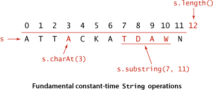
The Java String is decidedly not a primitive type. The standard implementation provides the operations just described to facilitate client programming. By contrast, many of the algorithms that we consider can work with a low-level representation such as an array of char values, and many clients might prefer such a representation, because it consumes less space and takes less time. For several of the algorithms that we consider, the cost of converting from one representation to the other would be higher than the cost of running the algorithm. As indicated in the table below, the differences in code that processes the two representations are minor (substring() is more complicated and is omitted), so use of one representation or the other is no barrier to understanding the algorithm.
UNDERSTANDING THE EFFICIENCY OF THESE OPERATIONS is a key ingredient in understanding the efficiency of several string-processing algorithms. Not all programming languages provide String implementations with these performance characteristics. For example, the substring operation and determining the length of a string take time proportional to the number of characters in the string in the widely used C programming language. Adapting the algorithms that we describe to such languages is always possible (implement an ADT like Java’s String), but also might present different challenges and opportunities.
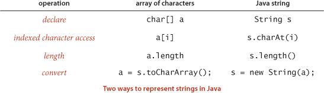
We primarily use the String data type in the text, with liberal use of indexing and length and occasional use of substring extraction and concatenation. When appropriate, we also provide on the booksite the corresponding code for char arrays. In performance-critical applications, the primary consideration in choosing between the two for clients is often the cost of accessing a character (a[i] is likely to be much faster than s.charAt(i) in typical Java implementations).
Some applications involve strings taken from a restricted alphabet. In such applications, it often makes sense to use an Alphabet class with the following API:
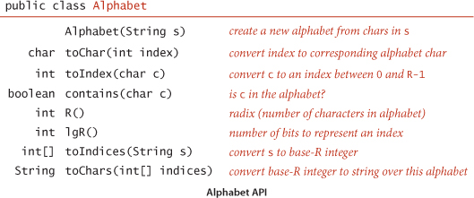
This API is based on a constructor that takes as argument an R-character string that specifies the alphabet and the toChar() and toIndex() methods for converting (in constant time) between string characters and int values between 0 and R-1. It also includes a contains() method for checking whether a given character is in the alphabet, the methods R() and lgR() for finding the number of characters in the alphabet and the number of bits needed to represent them, and the methods toIndices() and toChars() for converting between strings of characters in the alphabet and int arrays. For convenience, we also include the built-in alphabets in the table at the top of the next page, which you can access with code such as Alphabet.UNICODE. Implementing Alphabet is a straightforward exercise (see EXERCISE 5.1.12). We will examine a sample client on page 699.
One of the most important reasons to use Alphabet is that many algorithms gain efficiency through the use of character-indexed arrays, where we associate information with each character that we can retrieve with a single array access. With a Java String, we have to use an array of size 65,536; with Alphabet, we just need an array with one entry for each alphabet character. Some of the algorithms that we consider can produce huge numbers of such arrays, and in such cases, the space for arrays of size 65,536 can be prohibitive. As an example, consider the class Count at the bottom of the previous page, which takes a string of characters from the command line and prints a table of the frequency of occurrence of those characters that appear on standard input. The count[] array that holds the frequencies in Count is an example of a character-indexed array. This calculation may seem to you to be a bit frivolous; actually, it is the basis for a family of fast sorting methods that we will consider in SECTION 5.1.
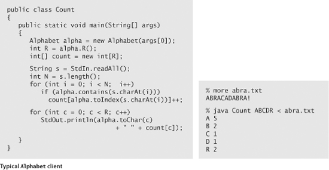
As you can see from several of the standard Alphabet examples, we often represent numbers as strings. The method toIndices() converts any String over a given Alphabet into a base-R number represented as an int[] array with all values between 0 and R − 1. In some situations, doing this conversion at the start leads to compact code, because any digit can be used as an index in a character-indexed array. For example, if we know that the input consists only of characters from the alphabet, we could replace the inner loop in Count with the more compact code
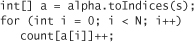
In this context, we refer to R as the radix, the base of the number system. Several of the algorithms that we consider are often referred to as “radix” methods because they work with one digit at a time.
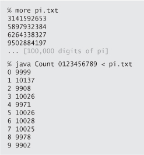
DESPITE THE ADVANTAGES of using a data type such as Alphabet in string-processing algorithms (particularly for small alphabets), we do not develop our implementations in the book for strings taken from a general Alphabet because
• The preponderance of clients just use String
• Conversion to and from indices tends to fall in the inner loop and slow down implementations considerably
• The code is more complicated, and therefore more difficult to understand
Accordingly we use String, use the constant R = 256 in the code and R as a parameter in the analysis, and discuss performance for general alphabets when appropriate. You can find full Alphabet-based implementations on the booksite.
FOR MANY SORTING APPLICATIONS, the keys that define the order are strings. In this section, we look at methods that take advantage of special properties of strings to develop sorts for string keys that are more efficient than the general-purpose sorts that we considered in CHAPTER 2.
We consider two fundamentally different approaches to string sorting. Both of them are venerable methods that have served programmers well for many decades.
The first approach examines the characters in the keys in a right-to-left order. Such methods are generally referred to as least-significant-digit (LSD) string sorts. Use of the term digit instead of character traces back to the application of the same basic method to numbers of various types. Thinking of a string as a base-256 number, considering characters from right to left amounts to considering first the least significant digits. This approach is the method of choice for string-sorting applications where all the keys are the same length.
The second approach examines the characters in the keys in a left-to-right order, working with the most significant character first. These methods are generally referred to as most-significant-digit (MSD) string sorts—we will consider two such methods in this section. MSD string sorts are attractive because they can get a sorting job done without necessarily examining all of the input characters. MSD string sorts are similar to quicksort, because they partition the array to be sorted into independent pieces such that the sort is completed by recursively applying the same method to the subarrays. The difference is that MSD string sorts use just the first character of the sort key to do the partitioning, while quicksort uses comparisons that could involve examining the whole key. The first method that we consider creates a partition for each character value; the second always creates three partitions, for sort keys whose first character is less than, equal to, or greater than the partitioning key’s first character.
The number of characters in the alphabet is an important parameter when analyzing string sorts. Though we focus on extended ASCII strings (R = 256), we will also consider strings taken from much smaller alphabets (such as genomic sequences) and from much larger alphabets (such as the 65,536-character Unicode alphabet that is an international standard for encoding natural languages).
As a warmup, we consider a simple method for sorting that is effective whenever the keys are small integers. This method, known as key-indexed counting, is useful in its own right and is also the basis for two of the three string sorts that we consider in this section.
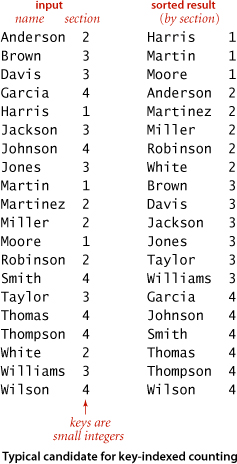
Consider the following data-processing problem, which might be faced by a teacher maintaining grades for a class with students assigned to sections, which are numbered 1, 2, 3, and so forth. On some occasions, it is necessary to have the class listed by section. Since the section numbers are small integers, sorting by key-indexed counting is appropriate. To describe the method, we assume that the information is kept in an array a[] of items that each contain a name and a section number, that section numbers are integers between 0 and R-1, and that the code a[i].key() returns the section number for the indicated student. The method breaks down into four steps, which we describe in turn.
The first step is to count the frequency of occurrence of each key value, using an int array count[]. For each item, we use the key to access an entry in count[] and increment that entry. If the key value is r, we increment count[r+1]. (Why +1? The reason for that will become clear in the next step.) In the example at left, we first increment count[3] because Anderson is in section 2, then we increment count[4] twice because Brown and Davis are in section 3, and so forth. Note that count[0] is always 0, and that count[1] is 0 in this example (no students are in section 0).
Next, we use count[] to compute, for each key value, the starting index positions in the sorted order of items with that key. In our example, since there are three items with key 1 and five items with key 2, then the items with key 3 start at position 8 in the sorted array. In general, to get the starting index for items with any given key value we sum the frequency counts of smaller values. For each key value r, the sum of the counts for key values less than r+1 is equal to the sum of the counts for key values less than r plus count[r], so it is easy to proceed from left to right to transform count[] into an index table that we can use to sort the data.

With the count[] array transformed into an index table, we accomplish the actual sort by moving the items to an auxiliary array aux[]. We move each item to the position in aux[] indicated by the count[] entry corresponding to its key, and then increment that entry to maintain the following invariant for count[]: for each key value r, count[r] is the index of the position in aux[] where the next item with key value r (if any) should be placed. This process produces a sorted result with one pass through the data, as illustrated at left. Note: In one of our applications, the fact that this implementation is stable is critical: items with equal keys are brought together but kept in the same relative order.
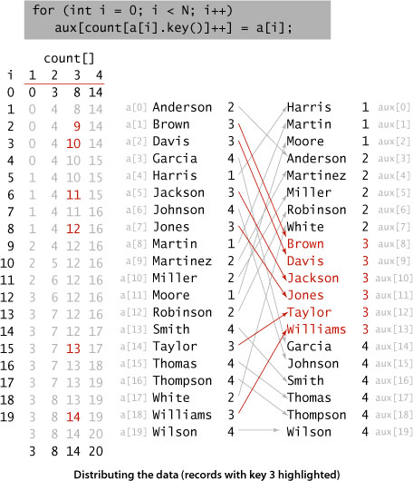
Since we accomplished the sort by moving the items to an auxiliary array, the last step is to copy the sorted result back to the original array.
KEY-INDEXED COUNTING is an extremely effective and often overlooked sorting method for applications where keys are small integers. Understanding how it works is a first step toward understanding string sorting. PROPOSITION A implies that key-indexed counting breaks through the N log N lower bound that we proved for sorting. How does it manage to do so? PROPOSITION I in SECTION 2.2 is a lower bound on the number of compares needed (when data is accessed only through compareTo())—key-indexed counting does no compares (it accesses data only through key()). When R is within a constant factor of N, we have a linear-time sort.
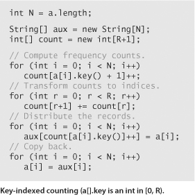
The first string-sorting method that we consider is known as least-significant-digit first (LSD) string sort. Consider the following motivating application: Suppose that a highway engineer sets up a device that records the license plate numbers of all vehicles using a busy highway for a given period of time and wants to know the number of different vehicles that used the highway. As you know from SECTION 2.1, one easy way to solve this problem is to sort the numbers, then make a pass through to count the different values, as in Dedup (page 490). License plates are a mixture of numbers and letters, so it is natural to represent them as strings. In the simplest situation (such as the California license plate examples at right) the strings all have the same number of characters. This situation is often found in sort applications—for example, telephone numbers, bank account numbers, and IP addresses are typically fixed-length strings.
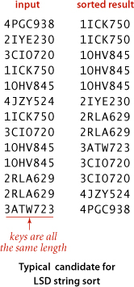
Sorting such strings can be done with key-indexed counting, as shown in ALGORITHM 5.1 (LSD) and the example below it on the facing page. If the strings are each of length W, we sort the strings W times with key-indexed counting, using each of the positions as the key, proceeding from right to left. It is not easy, at first, to be convinced that the method produces a sorted array—in fact, it does not work at all unless the key-indexed count implementation is stable. Keep this fact in mind and refer to the example when studying this proof of correctness:
Another way to state the proof is to think about the future: if the characters that have not been examined for a pair of keys are identical, any difference between the keys is restricted to the characters already examined, so the keys have been properly ordered and will remain so because of stability. If, on the other hand, the characters that have not been examined are different, the characters already examined do not matter, and a later pass will correctly order the pair based on the more significant differences.
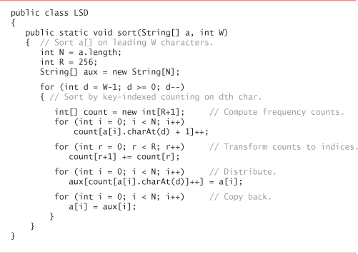
To sort an array a[] of strings that each have exactly W characters, we do W key-indexed counting sorts: one for each character position, proceeding from right to left.

LSD radix sorting is the method used by the old punched-card-sorting machines that were developed at the beginning of the 20th century and thus predated the use of computers in commercial data processing by several decades. Such machines had the capability of distributing a deck of punched cards among 10 bins, according to the pattern of holes punched in the selected columns. If a deck of cards had numbers punched in a particular set of columns, an operator could sort the cards by running them through the machine on the rightmost digit, then picking up and stacking the output decks in order, then running them through the machine on the next-to-rightmost digit, and so forth, until getting to the first digit. The physical stacking of the cards is a stable process, which is mimicked by key-indexed counting sort. Not only was this version of LSD radix sorting important in commercial applications up through the 1970s, but it was also used by many cautious programmers (and students!), who would have to keep their programs on punched cards (one line per card) and would punch sequence numbers in the final few columns of a program deck so as to be able to put the deck back in order mechanically if it were accidentally dropped. This method is also a neat way to sort a deck of playing cards: deal them into thirteen piles (one for each value), pick up the piles in order, then deal into four piles (one for each suit). The (stable) dealing process keeps the cards in order within each suit, so picking up the piles in suit order yields a sorted deck.
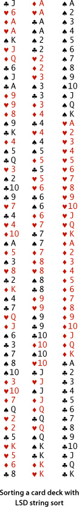
In many string-sorting applications (even license plates, for some states), the keys are not all be the same length. It is possible to adapt LSD string sort to work for such applications, but we leave this task for exercises because we will next consider two other methods that are specifically designed for variable-length keys.
From a theoretical standpoint, LSD string sort is significant because it is a linear-time sort for typical applications. No matter how large the value of N, it makes W passes through the data. Specifically:
For typical applications, R is far smaller than N, so PROPOSITION B implies that the total running time is proportional to WN. An input array of N strings that each have W characters has a total of WN characters, so the running time of LSD string sort is linear in the size of the input.
To implement a general-purpose string sort, where strings are not necessarily all the same length, we consider the characters in left-to-right order. We know that strings that start with a should appear before strings that start with b, and so forth. The natural way to implement this idea is a recursive method known as most-significant-digit-first (MSD) string sort. We use key-indexed counting to sort the strings according to their first character, then (recursively) sort the subarrays corresponding to each character (excluding the first character, which we know to be the same for each string in each subarray). Like quicksort, MSD string sort partitions the array into subarrays that can be sorted independently to complete the job, but it partitions the array into one subarray for each possible value of the first character, instead of the two or three partitions in quicksort.
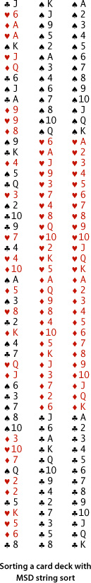
We need to pay particular attention to reaching the ends of strings in MSD string sort. For a proper sort, we need the subarray for strings whose characters have all been examined to appear as the first subarray, and we do not want to recursively sort this subarray. To facilitate these two parts of the computation we use a private two-argument charAt() method to convert from an indexed string character to an array index that returns -1 if the specified character position is past the end of the string. Then, we just add 1 to each returned value, to get a nonnegative int that we can use to index count[]. This convention means that we have R+1 different possible character values at each string position: 0 to signify end of string, 1 for the first alphabet character, 2 for the second alphabet character, and so forth. Since key-indexed counting already needs one extra position, we use the code int count[] = new int[R+2]; to create the array of frequency counts (and set all of its values to 0). Note: Some languages, notably C and C++, have a built-in end-of-string convention, so our code needs to be adjusted accordingly for such languages.
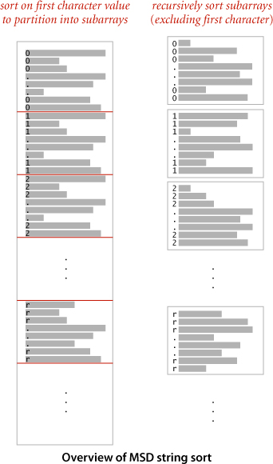
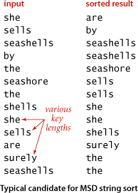
WITH THESE PREPARATIONS, the implementation of MSD string sort, in ALGORITHM 5.2, requires very little new code. We add a test to cutoff to insertion sort for small subarrays (using a specialized insertion sort that we will consider later), and we add a loop to key-indexed counting to do the recursive calls. As summarized in the table at the bottom of this page, the values in the count[] array (after serving to count the frequencies, transform counts to indices, and distribute the data) give us precisely the information that we need to (recursively) sort the subarrays corresponding to each character value.
The cost of MSD string sort depends strongly on the number of possible characters in the alphabet. It is easy to modify our sort method to take an Alphabet as argument, to allow for improved efficiency in clients involving strings taken from relatively small alphabets. The following changes will do the job:
• Save the alphabet in an instance variable alpha in the constructor.
• Set R to alpha.R() in the constructor.
• Replace s.charAt(d) with alpha.toIndex(s.charAt(d)) in charAt().
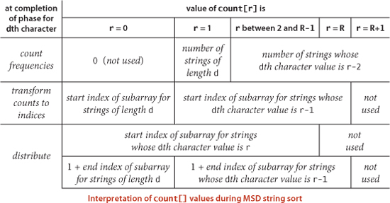
In our running examples, we use strings made up of lowercase letters. It is also easy to extend LSD string sort to provide this feature, but typically with much less impact on performance than for MSD string sort.
THE CODE IN ALGORITHM 5.2 is deceptively simple, masking a rather sophisticated computation. It is definitely worth your while to study the trace of the top level at the bottom of this page and the trace of recursive calls on the next page, to be sure that you understand the intricacies of the algorithm. This trace uses a cutoff-for-small-subarrays threshold value (M) of 0, so that you can see the sort to completion for this small example. The strings in this example are taken from Alphabet.LOWERCASE, with R = 26; bear in mind that typical applications might use Alphabet.EXTENDED.ASCII, with R = 256, or Alphabet.UNICODE, with R = 65536. For large alphabets, MSD string sort is so simple as to be dangerous—improperly used, it can consume outrageous amounts of time and space. Before considering performance characteristics in detail, we shall discuss three important issues (all of which we have considered before, in CHAPTER 2) that must be addressed in any application.
The basic idea behind MSD string sort is quite effective: in typical applications, the strings will be in order after examining only a few characters in the key. Put another way, the method quickly divides the array to be sorted into small subarrays. But this is a double-edged sword: we are certain to have to handle huge numbers of tiny subarrays, so we had better be sure that we handle them efficiently. Small subarrays are of critical importance in the performance of MSD string sort. We have seen this situation for other recursive sorts (quicksort and mergesort), but it is much more dramatic for MSD string sort. For example, suppose that you are sorting millions of ASCII strings (R = 256) that are all different, with no cutoff for small subarrays. Each string eventually finds its way to its own subarray, so you will sort millions of subarrays of size 1. But each such sort involves initializing the 258 entries of the count[] array to 0 and transforming them all to indices. This cost is likely to dominate the rest of the sort. With Unicode (R = 65536) the sort might be thousands of times slower. Indeed, many unsuspecting sort clients have seen their running times explode from minutes to hours on switching from ASCII to Unicode, for precisely this reason. Accordingly, the switch to insertion sort for small subarrays is a must for MSD string sort. To avoid the cost of reexamining characters that we know to be equal, we use the version of insertion sort given at the top of the page, which takes an extra argument d and assumes that the first d characters of all the strings to be sorted are known to be equal. The efficiency of this code depends on substring() being a constant-time operation. As with quicksort and mergesort, most of the benefit of this improvement is achieved with a small value of the cutoff, but the savings here are much more dramatic. The diagram at right shows the results of experiments where using a cutoff to insertion sort for subarrays of size 10 or less decreases the running time by a factor of 10 for a typical application.
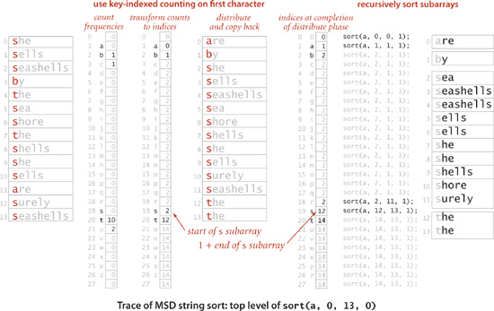
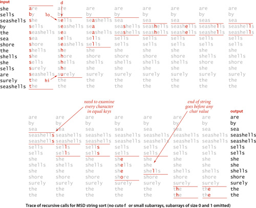
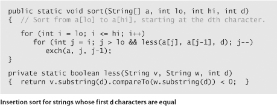
A second pitfall for MSD string sort is that it can be relatively slow for subarrays containing large numbers of equal keys. If a substring occurs sufficiently often that the cutoff for small subarrays does not apply, then a recursive call is needed for every character in all of the equal keys. Moreover, key-indexed counting is an inefficient way to determine that the characters are all equal: not only does each character need to be examined and each string moved, but all the counts have to be initialized, converted to indices, and so forth. Thus, the worst case for MSD string sorting is when all keys are equal. The same problem arises when large numbers of keys have long common prefixes, a situation often found in applications.
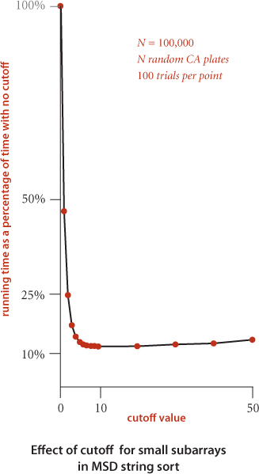
To do the partitioning, MSD uses two auxiliary arrays: the temporary array for distributing keys (aux[]) and the array that holds the counts that are transformed into partition indices (count[]). The aux[] array is of size N and can be created outside the recursive sort() method. This extra space can be eliminated by sacrificing stability (see EXERCISE 5.1.17), but it is often not a major concern in practical applications of MSD string sort. Space for the count[] array, on the other hand, can be an important issue (because it cannot be created outside the recursive sort() method) as addressed in PROPOSITION D below.
To study the performance of MSD string sort, we use a random string model, where each string consists of (independently) random characters, with no bound on their length. Long equal keys are essentially ignored, because they are extremely unlikely. The behavior of MSD string sort in this model is similar to its behavior in a model where we consider random fixed-length keys and also to its performance for typical real data; in all three, MSD string sort tends to examine just a few characters at the beginning of each key, as we will see.
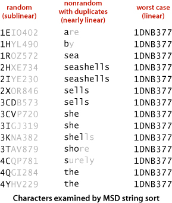
The running time of MSD string sort depends on the data. For compare-based methods, we were primarily concerned with the order of the keys; for MSD string sort, the order of the keys is immaterial, but we are concerned with the values of the keys.
• For random inputs, MSD string sort examines just enough characters to distinguish among the keys, and the running time is sublinear in the number of characters in the data (it examines a small fraction of the input characters).
• For nonrandom inputs, MSD string sort still could be sublinear but might need to examine more characters than in the random case, depending on the data. In particular, it has to examine all the characters in equla keys, so the running time is nearly linear in the number of characters in the data when significant numbers of equal keys are present.
• In the worst case, MSD string sort examines all the characters in the keys, so the running time is linear in the number of characters in the data (like LSD string sort). A worst-case input is one with all strings equal.
Some applications involve distinct keys that are well-modeled by the random string model; others have significant numbers of equal keys or long common prefixes, so the sort time is closer to the worst case. Our license-plate-processing application, for example, can fall anywhere between these extremes: if our engineer takes an hour of data from a busy interstate, there will not be many duplicates and the random model will apply; for a week’s worth of data on a local road, there will be numerous duplicates and performance will be closer to the worst case.
As food for thought and to indicate why the proof is beyond the scope of this book, note that key length does not play a role. Indeed, the random-string model allows key length to approach infinity. There is a nonzero probability that two keys will match for any specified number of characters, but this probability is so small as to not play a role in our performance estimates.
As we have discussed, the number of characters examined is not the full story for MSD string sort. We also have to take into account the time and space required to count frequencies and turn the counts into indices.
When N is small, the factor of R dominates. Though precise analysis of the total cost becomes difficult and complicated, you can estimate the effect of this cost just by considering small subarrays when keys are distinct. With no cutoff for small subarrays, each key appears in its own subarray, so NR array accesses are needed for just these subarrays. If we cut off to small subarrays of size M, we have about N/M subarrays of size M, so we are trading off NR/M array accesses with NM/4 compares, which tells us that we should choose M to be proportional to the square root of R.
As just discussed, equal keys cause the depth of the recursion to be proportional to the length of the keys. The immediate practical lesson to be drawn from PROPOSITION D is that it is quite possible for MSD string sort to run out of time or space when sorting long strings taken from large alphabets, particularly if long equal keys are to be expected. For example, with Alphabet.UNICODE and more than M equal 1,000-character strings, MSD.sort() would require space for over 65 million counters!
THE MAIN CHALLENGE in getting maximum efficiency from MSD string sort on keys that are long strings is to deal with lack of randomness in the data. Typically, keys may have long stretches of equal data, or parts of them might fall in only a narrow range. For example, an information-processing application for student data might have keys that include graduation year (4 bytes, but one of four different values), state names (perhaps 10 bytes, but one of 50 different values), and gender (1 byte with one of two given values), as well as a person’s name (more similar to random strings, but probably not short, with nonuniform letter distributions, and with trailing blanks in a fixed-length field). Restrictions like these lead to large numbers of empty subarrays during the MSD string sort. Next, we consider a graceful way to adapt to such situations.
We can also adapt quicksort to MSD string sorting by using 3-way partitioning on the leading character of the keys, moving to the next character on only the middle subarray (keys with leading character equal to the partitioning character). This method is not difficult to implement, as you can see in ALGORITHM 5.3: we just add an argument to the recursive method in ALGORITHM 2.5 that keeps track of the current character, adapt the 3-way partitioning code to use that character, and appropriately modify the recursive calls.
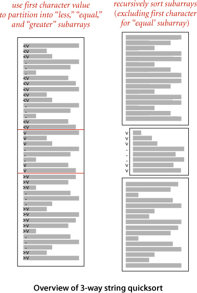
Although it does the computation in a different order, 3-way string quicksort amounts to sorting the array on the leading characters of the keys (using quicksort), then applying the method recursively on the remainder of the keys. For sorting strings, the method compares favorably with normal quicksort and with MSD string sort. Indeed, it is a hybrid of these two algorithms.
Three-way string quicksort divides the array into only three parts, so it involves more data movement than MSD string sort when the number of nonempty partitions is large because it has to do a series of 3-way partitions to get the effect of the multiway partition. On the other hand, MSD string sort can create large numbers of (empty) subarrays, whereas 3-way string quicksort always has just three. Thus, 3-way string quicksort adapts well to handling equal keys, keys with long common prefixes, keys that fall into a small range, and small arrays—all situations where MSD string sort runs slowly. Of particular importance is that the partitioning adapts to different kinds of structure in different parts of the key. Also, like quicksort, 3-way string quicksort does not use extra space (other than the implicit stack to support recursion), which is an important advantage over MSD string sort, which requires space for both frequency counts and an auxiliary array.
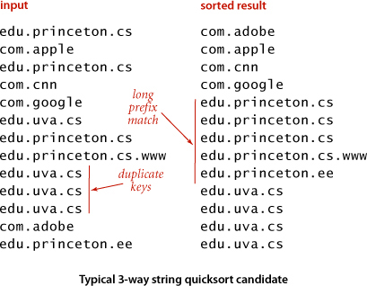
The figure at the bottom of this page shows all of the recursive calls that Quick3string makes for our example. Each subarray is sorted using precisely three recursive calls, except when we skip the recursive call on reaching the ends of the (equal) string(s) in the middle subarray.
As usual, in practice, it is worthwhile to consider various standard improvements to the implementation in ALGORITHM 5.3:
In any recursive algorithm, we can gain efficiency by treating small subarrays differently. In this case, we use the insertion sort from page 715, which skips the characters that are known to be equal. The improvement due to this change is likely to be significant, though not nearly as important as for MSD string sort.
To handle specialized alphabets, we could add an Alphabet argument alpha to each of the methods and replace s.charAt(d) with alpha.toIndex(s.charAt(d)) in charAt(). In this case, there is no benefit to doing so, and adding this code is likely to substantially slow the algorithm down because this code is in the inner loop.
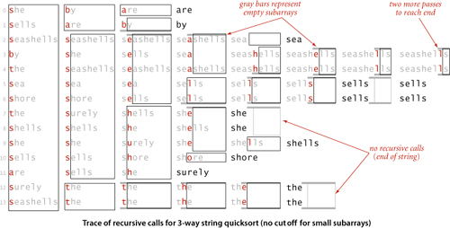
As with any quicksort, it is generally worthwhile to shuffle the array beforehand or to use a random paritioning item by swapping the first item with a random one. The primary reason to do so is to protect against worst-case performance in the case that the array is already sorted or nearly sorted.
For string keys, standard quicksort and all the other sorts in CHAPTER 2 are actually MSD string sorts, because the compareTo() method in String accesses the characters in left-to-right order. That is, compareTo() accesses only the leading characters if they are different, the leading two characters if the first characters are the same and the second different, and so forth. For example, if the first characters of the strings are all different, the standard sorts will examine just those characters, thus automatically realizing some of the same performance gain that we seek in MSD string sorting. The essential idea behind 3-way quicksort is to take special action when the leading characters are equal. Indeed, one way to think of ALGORITHM 5.3 is as a way for standard quicksort to keep track of leading characters that are known to be equal. In the small subarrays, where most of the compares in the sort are done, the strings are likely to have numerous equal leading characters. The standard algorithm has to scan over all those characters for each compare; the 3-way algorithm avoids doing so.
Consider a case where the string keys are long (and are all the same length, for simplicity), but most of the leading characters are equal. In such a situation, the running time of standard quicksort is proportional to the string length times 2N ln N, whereas the running time of 3-way string quicksort is proportional to N times the string length (to discover all the leading equal characters) plus 2N ln N character comparisons (to do the sort on the remaining short keys). That is, 3-way string quicksort requires up to a factor of 2lnN fewer character compares than normal quicksort. It is not unusual for keys in practical sorting applications to have characteristics similar to this artificial example.
As emphasized on page 716, considering random strings is instructive, but more detailed analysis is needed to predict performance for practical situations. Researchers have studied this algorithm in depth and have proved that no algorithm can beat 3-way string quicksort (measured by number of character compares) by more than a constant factor, under very general assumptions. To appreciate its versatility, note that 3-way string quicksort has no direct dependencies on the size of the alphabet.
As an example where 3-way string quicksort shines, we can consider a typical modern data-processing task. Suppose that you have built a website and want to analyze the traffic that it generates. You can have your system administrator supply you with a web log of all transactions on your site. Among the information associated with a transaction is the domain name of the originating machine. For example, the file week.log.txt on the booksite is a log of one week’s transactions on our booksite. Why does 3-way string quicksort do well on such a file? Because the sorted result is replete with long common prefixes that this method does not have to reexamine.
Naturally, we are interested in how the string-sorting methods that we have considered compare to the general-purpose methods that we considered in CHAPTER 2. The following table summarizes the important characteristics of the string-sort algorithms that we have discussed in this section (the rows for quicksort, mergesort, and 3-way quicksort are included from CHAPTER 2, for comparison).
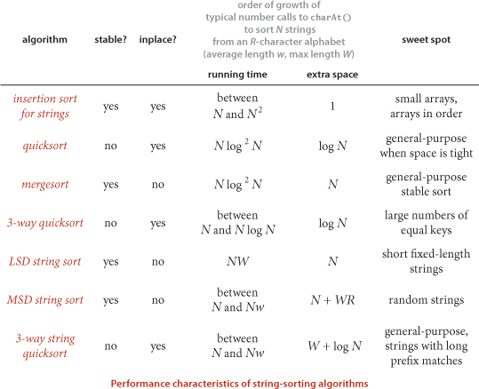
As in CHAPTER 2, multiplying these growth rates by appropriate algorithm- and data-dependent constants gives an effective way to predict running time.
As explored in the examples that we have already considered and in many other examples in the exercises, different specific situations call for different methods, with appropriate parameter settings. In the hands of an expert (maybe that’s you, by now), dramatic savings can be realized for certain situations.
Q. Does the Java system sort use one of these methods for String sorts?
A. No, but the standard implementation includes a fast string compare that makes standard sorts competitive with the methods considered here.
Q. So, I should just use the system sort for String keys?
A. Probably yes in Java, though if you have huge numbers of strings or need an exceptionally fast sort, you may wish to switch to char arrays instead of String values and use a radix sort.
Q. What is explanation of the log2N factors on the table in the previous page?
A. They reflect the idea that most of the comparisons for these algorithms wind up being between keys with a common prefix of length log N. Recent research has established this fact for random strings with careful mathematical analysis (see booksite for reference).
5.1.1 Develop a sort implementation that counts the number of different key values, then uses a symbol table to apply key-indexed counting to sort the array. (This method is not for use when the number of different key values is large.)
5.1.2 Give a trace for LSD string sort for the keys
no is th ti fo al go pe to co to th ai of th pa
5.1.3 Give a trace for MSD string sort for the keys
no is th ti fo al go pe to co to th ai of th pa
5.1.4 Give a trace for 3-way string quicksort for the keys
no is th ti fo al go pe to co to th ai of th pa
5.1.5 Give a trace for MSD string sort for the keys
now is the time for all good people to come to the aid of
5.1.6 Give a trace for 3-way string quicksort for the keys
now is the time for all good people to come to the aid of
5.1.7 Develop an implementation of key-indexed counting that makes use of an array of Queue objects.
5.1.8 Give the number of characters examined by MSD string sort and 3-way string quicksort for a file of N keys a, aa, aaa, aaaa, aaaaa, . . .
5.1.9 Develop an implementation of LSD string sort that works for variable-length strings.
5.1.10 What is the total number of characters examined by 3-way string quicksort when sorting N fixed-length strings (all of length W), in the worst case?
5.1.11 Queue sort. Implement MSD string sorting using queues, as follows: Keep one queue for each bin. On a first pass through the items to be sorted, insert each item into the appropriate queue, according to its leading character value. Then, sort the sublists and stitch together all the queues to make a sorted whole. Note that this method does not involve keeping the count[] arrays within the recursive method.
5.1.12 Alphabet. Develop an implementation of the Alphabet API that is given on page 698 and use it to develop LSD and MSD sorts for general alphabets.
5.1.13 Hybrid sort. Investigate the idea of using standard MSD string sort for large arrays, in order to get the advantage of multiway partitioning, and 3-way string quicksort for smaller arrays, in order to avoid the negative effects of large numbers of empty bins.
5.1.14 Array sort. Develop a method that uses 3-way string quicksort for keys that are arrays of int values.
5.1.15 Sublinear sort. Develop a sort implementation for int values that makes two passes through the array to do an LSD sort on the leading 16 bits of the keys, then does an insertion sort.
5.1.16 Linked-list sort. Develop a sort implementation that takes a linked list of nodes with String key values as argument and rearranges the nodes so that they appear in sorted order (returning a link to the node with the smallest key). Use 3-way string quicksort.
5.1.17 In-place key-indexed counting. Develop a version of key-indexed counting that uses only a constant amount of extra space. Prove that your version is stable or provide a counterexample.
5.1.18 Random decimal keys. Write a static method randomDecimalKeys that takes int values N and W as arguments and returns an array of N string values that are each W-digit decimal numbers.
5.1.19 Random CA license plates. Write a static method randomPlatesCA that takes an int value N as argument and returns an array of N String values that represent CA license plates as in the examples in this section.
5.1.20 Random fixed-length words. Write a static method randomFixedLengthWords that takes int values N and W as arguments and returns an array of N string values that are each strings of W characters from the alphabet.
5.1.21 Random items. Write a static method randomItems that takes an int value N as argument and returns an array of N string values that are each strings of length between 15 and 30 made up of three fields: a 4-character field with one of a set of 10 fixed strings; a 10-char field with one of a set of 50 fixed strings; a 1-character field with one of two given values; and a 15-byte field with random left-justified strings of letters equally likely to be 4 through 15 characters long.
5.1.22 Timings. Compare the running times of MSD string sort and 3-way string quicksort, using various key generators. For fixed-length keys, include LSD string sort.
5.1.23 Array accesses. Compare the number of array accesses used by MSD string sort and 3-way string sort, using various key generators. For fixed-length keys, include LSD string sort.
5.1.24 Rightmost character accessed. Compare the position of the rightmost character accessed for MSD string sort and 3-way string quicksort, using various key generators.
As with sorting, we can take advantage of properties of strings to develop search methods (symbol-table implementations) that can be more efficient than the general-purpose methods of CHAPTER 3 for typical applications where search keys are strings.
Specifically, the methods that we consider in this section achieve the following performance characteristics in typical applications, even for huge tables:
• Search hits take time proportional to the length of the search key.
• Search misses involve examining only a few characters.
On reflection, these performance characteristics are quite remarkable, one of the crowning achievements of algorithmic technology and a primary factor in enabling the development of the computational infrastructure we now enjoy that has made so much information instantly accessible. Moreover, we can extend the symbol-table API to include character-basedoperations defined for string keys (but not necessarily for all Comparable types of keys) that are powerful and quite useful in practice, as in the following API:
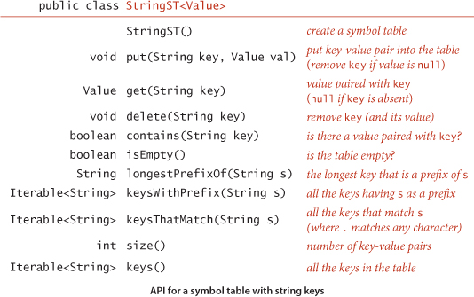
This API differs from the symbol-table API introduced in CHAPTER 3 in the following aspects:
• We replace the generic type Key with the concrete type String.
• We add three new methods, longestPrefixOf(), keysWithPrefix() and keysThatMatch().
We retain the basic conventions of our symbol-table implementations in CHAPTER 3 (no duplicate or null keys and no null values).
As we saw for sorting with string keys, it is often quite important to be able to work with strings from a specified alphabet. Simple and efficient implementations that are the method of choice for small alphabets turn out to be useless for large alphabets because they consume too much space. In such cases, it is certainly worthwhile to add a constructor that allows clients to specify the alphabet. We will consider the implementation of such a constructor later in this section but omit it from the API for now, in order to concentrate on string keys.
The following descriptions of the three new methods use the keys she sells sea shells by the sea shore to give examples:
• longestPrefixOf() takes a string as argument and returns the longest key in the symbol table that is a prefix of that string. For the keys above, longestPrefixOf("shell") is she and longestPrefixOf("shellsort") is shells.
• keysWithPrefix() takes a string as argument and returns all the keys in the symbol table having that string as prefix. For the keys above, keysWithPrefix("she") is she and shells, and keysWithPrefix("se") is sells and sea.
• keysThatMatch() takes a string as argument and returns all the keys in the symbol table that match that string, in the sense that a period (.) in the argument string matches any character. For the keys above, keysThatMatch(".he") returns she and the, and keysThatMatch("s..") returns she and sea.
We will consider in detail implementations and applications of these operations after we have seen the basic symbol-table methods. These particular operations are representative of what is possible with string keys; we discuss several other possibilities in the exercises.
To focus on the main ideas, we concentrate on put(), get(), and the new methods; we assume (as in CHAPTER 3) default implementations of contains() and isEmpty(); and we leave implementations of size() and delete() for exercises. Since strings are Comparable, extending the API to also include the ordered operations defined in the ordered symbol-table API in CHAPTER 3 is possible (and worthwhile); we leave those implementations (which are generally straightforward) to exercises and booksite code.
In this section, we consider a search tree known as a trie, a data structure built from the characters of the string keys that allows us to use the characters of the search key to guide the search. The name “trie” is a bit of wordplay introduced by E. Fredkin in 1960 because the data structure is used for retrieval, but we pronounce it “try” to avoid confusion with “tree.” We begin with a high-level description of the basic properties of tries, including search and insert algorithms, and then proceed to the details of the representation and Java implementation.
As with search trees, tries are data structures composed of nodes that contain links that are either null or references to other nodes. Each node is pointed to by just one other node, which is called its parent (except for one node, the root, which has no nodes pointing to it), and each node has R links, where R is the alphabet size. Often, tries have a substantial number of null links, so when we draw a trie, we typically omit null links. Although links point to nodes, we can view each link as pointing to a trie, the trie whose root is the referenced node. Each link corresponds to a character value—since each link points to exactly one node, we label each node with the character value corresponding to the link that points to it (except for the root, which has no link pointing to it). Each node also has a corresponding value, which may be null or the value associated with one of the string keys in the symbol table. Specifically, we store the value associated with each key in the node corresponding to its last character. It is very important to bear in mind the following fact: nodes with null values exist to facilitate search in the trie and do not correspond to keys. An example of a trie is shown at right.
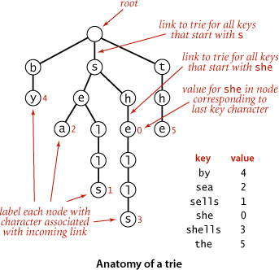
Finding the value associated with a given string key in a trie is a simple process, guided by the characters in the search key. Each node in the trie has a link corresponding to each possible string character. We start at the root, then follow the link associated with the first character in the key; from that node we follow the link associated with the second character in the key; from that node we follow the link associated with the third character in the key and so forth, until reaching the last character of the key or a null link. At this point, one of the following three conditions holds (refer to the figure above for examples):
• The value at the node corresponding to the last character in the key is not null (as in the searches for shells and she depicted at left above). This result is a search hit—the value associated with the key is the value in the node corresponding to its last character.
• The value in the node corresponding to the last character in the key is null (as in the search for shell depicted at top right above). This result is a search miss: the key is not in the table.
• The search terminated with a null link (as in the search for shore depicted at bottom right above). This result is also a search miss.
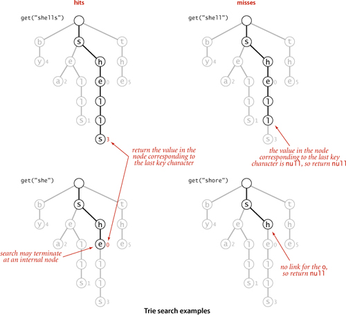
In all cases, the search is accomplished just by examining nodes along a path from the root to another node in the trie.
As with binary search trees, we insert by first doing a search: in a trie that means using the characters of the key to guide us down the trie until reaching the last character of the key or a null link. At this point, one of the following two conditions holds:
• We encountered a null link before reaching the last character of the key. In this case, there is no trie node corresponding to the last character in the key, so we need to create nodes for each of the characters in the key not yet encountered and set the value in the last one to the value to be associated with the key.
• We encountered the last character of the key before reaching a null link. In this case, we set that node’s value to the value to be associated with the key (whether or not that value is null), as usual with our associative array convention.
In all cases, we examine or create a node in the trie for each key character. The construction of the trie for our standard indexing client from CHAPTER 3 with the input
she sells sea shells by the sea shore
is shown on the facing page.
As mentioned at the outset, our trie diagrams do not quite correspond to the data structures our programs will build, because we do not draw null links. Taking null links into account emphasizes the following important characteristics of tries:
• Every node has R links, one for each possible character.
• Characters and keys are implicitly stored in the data structure.
For example, the figure below depicts a trie for keys made up of lowercase letters, with each node having a value and 26 links. The first link points to a subtrie for keys beginning with a, the second points to a subtrie for substrings beginning with b, and so forth. Keys in the trie are implicitly represented by paths from the root that end at nodes with non-null values. For example, the string sea is associated with the value 2 in the trie because the 19th link in the root (which points to the trie for all keys that start with s) is not null and the 5th link in the node that link refers to (which points to the trie for all keys that start with se) is not null, and the first link in the node that link refers to (which points to the trie for all keys that starts with sea) has the value 2. Neither the string sea nor the characters s, e, and a are stored in the data structure. Indeed, the data structure contains no characters or strings, just links and values. Since the parameter R plays such a critical role, we refer to a trie for an R-character alphabet as an R-way trie.
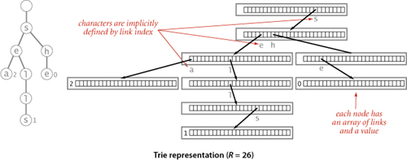
WITH THESE PREPARATIONS, the symbol-table implementation TrieST on the facing page is straightforward. It uses recursive methods like those that we used for search trees in CHAPTER 3, based on a private Node class with instance variable val for client values and an array next[] of Node references. The methods are compact recursive implementations that are worthy of careful study. Next, we discuss implementations of the constructor that takes an Alphabet as argument and the methods size(), keys(), longestPrefixOf(), keysWithPrefix(), keysThatMatch(), and delete(). These are also easily understood recursive methods, each slightly more complicated than the last.
As for the binary search trees of CHAPTER 3, three straightforward options are available for implementing size():
• An eager implementation where we maintain the number of keys in an instance variable N.
• A very eager implementation where we maintain the number of keys in a subtrie as a node instance variable that we update after the recursive calls in put() and delete().
• A lazy recursive implementation like the one at right. It traverses all of the nodes in the trie, counting the number having a non-null value.
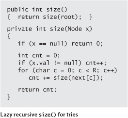
As with binary search trees, the lazy implementation is instructive but should be avoided because it can lead to performance problems for clients. The eager implementations are explored in the exercises.
Because characters and keys are represented implicitly in tries, providing clients with the ability to iterate through the keys presents a challenge. As with binary search trees, we accumulate the string keys in a Queue, but for tries we need to create explicit representations of all of the string keys, not just find them in the data structure. We do so with a recursive private method collect() that is similar to size() but also maintains a string with the sequence of characters on the path from the root. Each time that we visit a node via a call to collect() with that node as first argument, the second argument is the string associated with that node (the sequence of characters on the path from the root to the node). To visit a node, we add its associated string to the queue if its value is not null, then visit (recursively) all the nodes in its array of links, one for each possible character. To create the key for each call, we append the character corresponding to the link to the current key. We use this collect() method to collect keys for both the keys() and the keysWithPrefix() methods in the API. To implement keys() we call keysWithPrefix() with the empty string as argument; to implement keysWithPrefix(), we call get() to find the trie node corresponding to the given prefix (null if there is no such node), then use the collect() method to complete the job. The diagram at left shows a trace of collect() (or keysWithPrefix("")) for an example trie, giving the value of the second argument key and the contents of the queue for each call to collect(). The diagram at the top of the facing page illustrates the process for keysWithPrefix("sh").
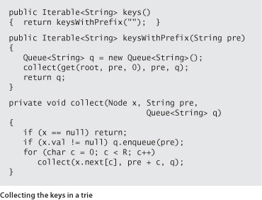
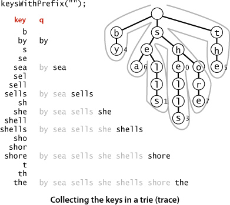
To implement keysThatMatch(), we use a similar process, but add an argument specifying the pattern to collect() and add a test to make a recursive call for all links when the pattern character is a wildcard or only for the link corresponding to the pattern character otherwise, as in the code below. Note also that we do not need to consider keys longer than the pattern.
To find the longest key that is a prefix of a given string, we use a recursive method like get() that keeps track of the length of the longest key found on the search path (by passing it as a parameter to the recursive method, updating the value whenever a node with a non-null value is encountered). The search ends when the end of the string or a null link is encountered, whichever comes first.
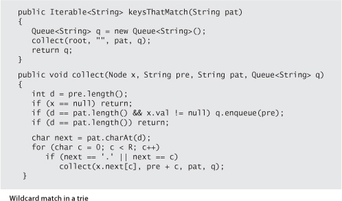
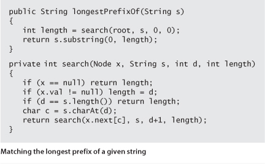
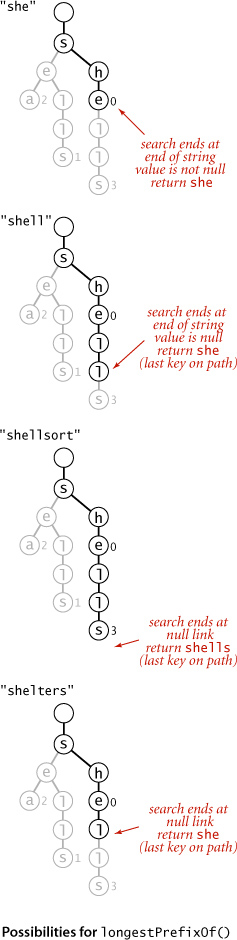
The first step needed to delete a key-value pair from a trie is to use a normal search to find the node corresponding to the key and set the corresponding value to null. If that node has a non-null link to a child, then no more work is required; if all the links are null, we need to remove the node from the data structure. If doing so leaves all the links null in its parent, we need to remove that node, and so forth. The implementation on the facing page demonstrates that this action can be accomplished with remarkably little code, using our standard recursive setup: after the recursive calls for a node x, we return null if the client value and all of the links in a node are null; otherwise we return x.
As usual, ALGORITHM 5.4 is coded for Java String keys, but it is a simple matter to modify the implementation to handle keys taken from any alphabet, as follows:
• Implement a constructor that takes an Alphabet as argument, which sets an Alphabet instance variable to that argument value and the instance variable R to the number of characters in the alphabet.
• Use the toIndex() method from Alphabet in get() and put() to convert string characters to indices between 0 and R − 1.
• Use the toChar() method from Alphabet to convert indices between 0 and R − 1 to char values. This operation is not needed in get() and put() but is important in the implementations of keys(), keysWithPrefix(), and keysThatMatch().
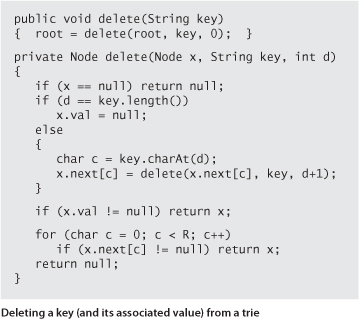
With these changes, you can save a considerable amount of space (use only R links per node) when you know that your keys are taken from a small alphabet, at the cost of the time required to do the conversions between characters and indices.
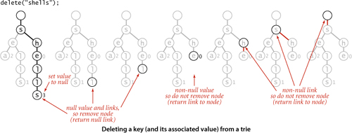
THE CODE THAT WE HAVE CONSIDERED is a compact and complete implementation of the string symbol-table API that has broadly useful practical applications. Several variations and extensions are discussed in the exercises. Next, we consider basic properties of tries, and some limitations on their utility.
As usual, we are interested in knowing the amount of time and space required to use tries in typical applications. Tries have been extensively studied and analyzed, and their basic properties are relatively easy to understand and to apply.
This fundamental fact is a distinctive feature of tries: for all of the other search tree structures that we have considered so far, the tree that we construct depends both on the set of keys and on the order in which we insert those keys.
How long does it take to find the value associated with a key? For BSTs, hashing, and other methods in CHAPTER 4, we needed mathematical analysis to study this question, but for tries it is very easy to answer:
From a theoretical standpoint, the implication of PROPOSITION G is that tries are optimal for search hit—we could not expect to do better than search time proportional to the length of the search key. Whatever algorithm or data structure we are using, we cannot know that we have found a key that we seek without examining all of its characters. From a practical standpoint this guarantee is important because it does not depend on the number of keys: when we are working with 7-character keys like license plate numbers, we know that we need to examine at most 8 nodes to search or insert; when we are working with 20-digit account numbers, we only need to examine at most 21 nodes to search or insert.
Suppose that we are searching for a key in a trie and find that the link in the root node that corresponds to its first character is null. In this case, we know that the key is not in the table on the basis of examining just one node. This case is typical: one of the most important properties of tries is that search misses typically require examining just a few nodes. If we assume that the keys are drawn from the random string model (each character is equally likely to have any one of the R different character values) we can prove this fact:
From a practical standpoint, the most important implication of this proposition is that search miss does not depend on the key length. For example, it says that unsuccessful search in a trie built with 1 million random keys will require examining only three or four nodes, whether the keys are 7-digit license plates or 20-digit account numbers. While it is unreasonable to expect truly random keys in practical applications, it is reasonable to hypothesize that the behavior of trie algorithms for keys in typical applications is described by this model. Indeed, this sort of behavior is widely seen in practice and is an important reason for the widespread use of tries.
How much space is needed for a trie? Addressing this question (and understanding how much space is available) is critical to using tries effectively.
The table on the facing page shows the costs for some typical applications that we have considered. It illustrates the following rules of thumb for tries:
• When keys are short, the number of links is close to RN.
• When keys are long, the number of links is close to RNw.
• Therefore, decreasing R can save a huge amount of space.
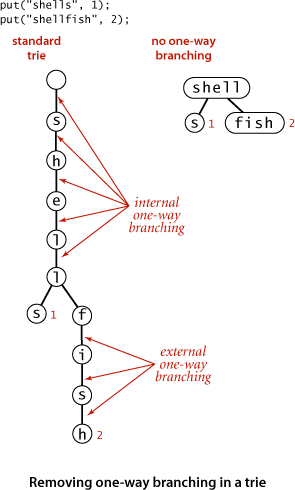
A more subtle message of this table is that it is important to understand the properties of the keys to be inserted before deploying tries in an application.
The primary reason that trie space is excessive for long keys is that long keys tend to have long tails in the trie, with each node having a single link to the next node (and, therefore, R−1 null links). This situation is not difficult to correct (see EXERCISE 5.2.11). A trie might also have internal one-way branching. For example, two long keys may be equal except for their last character. This situation is a bit more difficult to address (see EXERCISE 5.2.12). These changes can make trie space usage a less important factor than for the straightforward implementation that we have considered, but they are not necessarily effective in practical applications. Next, we consider an alternative approach to reducing space usage for tries.
THE BOTTOM LINE is this: do not try to use ALGORITHM 5.4 for large numbers of long keys taken from large alphabets, because it will require space proportional to R times the total number of key characters. Otherwise, if you can afford the space, trie performance is difficult to beat.
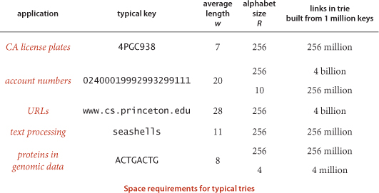
To help us avoid the excessive space cost associated with R-way tries, we now consider an alternative representation: the ternary search trie (TST). In a TST, each node has a character, three links, and a value. The three links correspond to keys whose current characters are less than, equal to, or greater than the node’s character. In the R-way tries of ALGORITHM 5.4, trie nodes are represented by R links, with the character corresponding to each non-null link implictly represented by its index. In the corresponding TST, characters appear explicitly in nodes—we find characters corresponding to keys only when we are traversing the middle links.
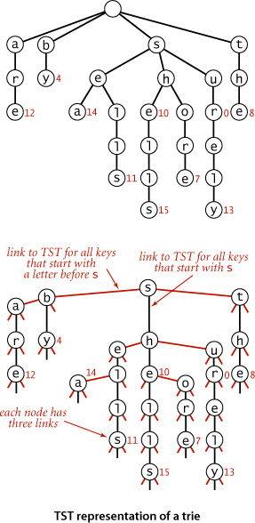
The search and insert code for implementing our symbol-table API with TSTs writes itself. To search, we compare the first character in the key with the character at the root. If it is less, we take the left link; if it is greater, we take the right link; and if it is equal, we take the middle link and move to the next search key character. In each case, we apply the algorithm recursively. We terminate with a search miss if we encounter a null link or if the node where the search ends has a null value, and we terminate with a search hit if the node where the search ends has a non-null value. To insert a new key, we search, then add new nodes for the characters in the tail of the key, just as we did for tries. ALGORITHM 5.5 gives the details of the implementation of these methods.
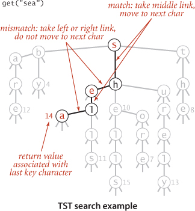
Using this arrangement is equivalent to implementing each R-way trie node as a binary search tree that uses as keys the characters corresponding to non-null links. By contrast, ALGORITHM 5.4 uses a key-indexed array. A TST and its corresponding trie are illustrated above. Continuing the correspondence described in CHAPTER 3 between binary search trees and sorting algorithms, we see that TSTs correspond to 3-way string quicksort in the same way that BSTs correspond to quicksort and tries correspond to MSD sorting. The figures on page 714 and 721, which show the recursive call structure for MSD and 3-way three-way string quicksort (respectively), correspond precisely to the trie and TST drawn on page 746 for that set of keys. Space for links in tries corresponds to the space for counters in string sorting; 3-way branching provides an effective solution to both problems.
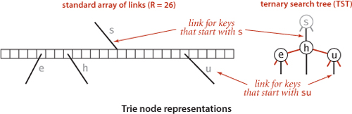
A TST is a compact representation of an R-way trie, but the two data structures have remarkably different properties. Perhaps the most important difference is that PROPERTY A does not hold for TSTs: the BST representations of each trie node depend on the order of key insertion, as with any other BST.
The most important property of TSTs is that they have just three links in each node, so a TST requires far less space than the corresponding trie.
Actual space usage is generally less than the upper bound of three links per character, because keys with common prefixes share nodes at high levels in the tree.
To determine the cost of search (and insert) in a TST, we multiply the cost for the corresponding trie by the cost of traversing the BST representation of each trie node..
In the worst case, a node might be a full R-way node that is unbalanced, stretched out like a singly linked list, so we would need to multiply by a factor of R. More typically, we might expect to do ln R or fewer character compares at the first level (since the root node behaves like a random BST on the R different character values) and perhaps at a few other levels (if there are keys with a common prefix and up to R different values on the character following the prefix), and to do only a few compares for most characters (since most trie nodes are sparsely populated with non-null links). Search misses are likely to involve only a few character compares, ending at a null link high in the trie, and search hits involve only about one compare per search key character, since most of them are in nodes with one-way branching at the bottom of the trie.
The prime virtue of using TSTs is that they adapt gracefully to irregularities in search keys that are likely to appear in practical applications. In particular, note that there is no reason to allow for strings to be built from a client-supplied alphabet, as was crucial for tries. There are two main effects. First, keys in practical applications come from large alphabets, and usage of particular characters in the character sets is far from uniform. With TSTs, we can use a 256-character ASCII encoding or a 65,536-character Unicode encoding without having to worry about the excessive costs of nodes with 256- or 65,536-way branching, and without having to determine which sets of characters are relevant. Unicode strings in non-Roman alphabets can have thousands of characters—TSTs are especially appropriate for standard Java String keys that consist of such characters. Second, keys in practical applications often have a structured format, differing from application to application, perhaps using only letters in one part of the key, only digits in another part of the key. In our CA license plate example, the second, third, and fourth characters are uppercase letter (R = 26) and the other characters are decimal digits (R = 10). In a TST for such keys, some of the trie nodes will be represented as 10-node BSTs (for places where all keys have digits) and others will be represented as 26-node BSTs (for places where all keys have letters). This structure develops automatically, without any need for special analysis of the keys.
Since a TST represents a trie, implementations of longestPrefixOf(), keys(), keysWithPrefix(), and keysThatMatch() are easily adapted from the corresponding code for tries in the previous section, and a worthwhile exercise for you to cement your understanding of both tries and TSTs (see EXERCISE 5.2.9). The same tradeoff as for search (linear memory usage but an extra ln R multiplicative factor per character compare) holds.
The delete() method for TSTs requires more work. Essentially, each character in the key to be deleted belongs to a BST. In a trie, we could remove the link corresponding to a character by setting the corresponding entry in the array of links to null; in a TST, we have to use BST node deletion to remove the node corresponding to the character.
An easy improvement to TST-based search is to use a large explicit multiway node at the root. The simplest way to proceed is to keep a table of R TSTs: one for each possible value of the first character in the keys. If R is not large, we might use the first two letters of the keys (and a table of size R2). For this method to be effective, the leading digits of the keys must be well-distributed. The resulting hybrid search algorithm corresponds to the way that a human might search for names in a telephone book. The first step is a multiway decision (“Let’s see, it starts with ‘A’,”), followed perhaps by some two-way decisions (“It’s before ‘Andrews,’ but after ‘Aitken,’”), followed by sequential character matching (“‘Algonquin,’ ... No, ‘Algorithms’ isn’t listed, because nothing starts with ‘Algor’!”). These programs are likely to be among the fastest available for searching with string keys.
Just as with tries, we can make TSTs more efficient in their use of space by putting keys in leaves at the point where they are distinguished and by eliminating one-way branching between internal nodes.
DESPITE THE TEMPTATION to tune the algorithm to peak performance, we should not lose sight of the fact that one of the most attractive features of TSTs is that they free us from having to worry about application-specific dependencies, often providing good performance without any tuning.
As with string sorting, we are naturally interested in how the string-searching methods that we have considered compare to the general-purpose methods that we considered in CHAPTER 3. The following table summarizes the important characteristics of the algorithms that we have discussed in this section (the rows for BSTs, red-black BSTs and hashing are included from CHAPTER 3, for comparison). For a particular application, these entries must be taken as indicative, not definitive, since so many factors (such as characteristics of keys and mix of operations) come into play when studying symbol-table implementations.
If space is available, R-way tries provide the fastest search, essentially completing the job with a constant number of character compares. For large alphabets, where space may not be available for R-way tries, TSTs are preferable, since they use a logarithmic number of character compares, while BSTs use a logarithmic number of key compares. Hashing can be competitive, but, as usual, cannot support ordered symbol-table operations or extended character-based API operations such as prefix or wildcard match.
Q. Does the Java system sort use one of these methods for searching with String keys?
A. No.
5.2.1 Draw the R-way trie that results when the keys
no is th ti fo al go pe to co to th ai of th pa
are inserted in that order into an initially empty trie (do not draw null links).
5.2.2 Draw the TST that results when the keys
no is th ti fo al go pe to co to th ai of th pa
are inserted in that order into an initially empty TST.
5.2.3 Draw the R-way trie that results when the keys
now is the time for all good people to come to the aid of
are inserted in that order into an initially empty trie (do not draw null links).
5.2.4 Draw the TST that results when the keys
now is the time for all good people to come to the aid of
are inserted in that order into an initially empty TST.
5.2.5 Develop nonrecursive versions of TrieST and TST.
5.2.6 Implement the following API, for a StringSET data type:
5.2.7 Empty string in TSTs. The code in TST does not handle the empty string properly. Explain the problem and suggest a correction.
5.2.8 Ordered operations for tries. Implement the floor(), ceil(), rank(), and select() (from our standard ordered ST API from CHAPTER 3) for TrieST.
5.2.9 Extended operations for TSTs. Implement keys() and the extended operations introduced in this section—longestPrefixOf(), keysWithPrefix(), and keysThatMatch()—for TST.
5.2.10 Size. Implement very eager size() (that keeps in each node the number of keys in its subtree) for TrieST and TST.
5.2.11 External one-way branching. Add code to TrieST and TST to eliminate external one-way branching.
5.2.12 Internal one-way branching. Add code to TrieST and TST to eliminate internal one-way branching.
5.2.13 Hybrid TST with R2-way branching at the root. Add code to TST to do multiway branching at the first two levels, as described in the text.
5.2.14 Unique substrings of length L. Write a TST client that reads in text from standard input and calculates the number of unique substrings of length L that it contains. For example, if the input is cgcgggcgcg, then there are five unique substrings of length 3: cgc, cgg, gcg, ggc, and ggg. Hint: Use the string method substring(i, i + L) to extract the ith substring, then insert it into a symbol table.
5.2.15 Unique substrings. Write a TST client that reads in text from standard input and calculates the number of distinct substrings of any length. This can be done very efficiently with a suffix tree—see CHAPTER 6
5.2.16 Document similarity. Write a TST client with a static method that takes an int value L and two file names as command-line arguments and computes the L-similarity of the two documents: the Euclidean distance between the frequency vectors defined by the number of occurrences of each trigram divided by the number of trigrams. Include a static method main() that takes an int value L as command-line argument and a list of file names from standard input and prints a matrix showing the L-similarity of all pairs of documents.
5.2.17 Spell checking. Write a TST client SpellChecker that takes as command-line argument the name of a file containing a dictionary of words in the English language, and then reads a string from standard input and prints out any word that is not in the dictionary. Use a string set.
5.2.18 Whitelist. Write a TST client that solves the whitelisting problem presented in SECTION 1.1 and revisited in SECTION 3.5 (see page 491).
5.2.19 Random phone numbers. Write a TrieST client (with R = 10) that takes as command line argument an int value N and prints N random phone numbers of the form (xxx) xxx-xxxx. Use a symbol table to avoid choosing the same number more than once. Use the file AreaCodes.txt from the booksite to avoid printing out bogus area codes.
5.2.20 Contains prefix. Add a method containsPrefix() to StringSET (see EXERCISE 5.2.6) that takes a string s as input and returns true if there is a string in the set that contains s as a prefix.
5.2.21 Substring matches. Given a list of (short) strings, your goal is to support queries where the user looks up a string s and your job is to report back all strings in the list that contain s. Design an API for this task and develop a TST client that implements your API. Hint: Insert the suffixes of each word (e.g., string, tring, ring, ing, ng, g) into the TST.
5.2.22 Typing monkeys. Suppose that a typing monkey creates random words by appending each of 26 possible letter with probability p to the current word and finishes the word with probability 1 − 26p. Write a program to estimate the frequency distribution of the lengths of words produced. If "abc" is produced more than once, count it only once.
5.2.23 Duplicates (revisited again). Redo EXERCISE 3.5.30 using StringSET (see EXERCISE 5.2.6) instead of HashSET. Compare the running times of the two approaches. Then use Dedup to run the experiments for N = 107, 108, and 109, repeat the experiments for random long values and discuss the results.
5.2.24 Spell checker. Redo EXERCISE 3.5.31, which uses the file dictionary.txt from the booksite and the BlackFilter client on page 491 to print all misspelled words in a text file. Compare the performance of TrieST and TST for the file war.txt with this client and discuss the results.
5.2.25 Dictionary. Redo EXERCISE 3.5.32: Study the performance of a client like LookupCSV (using TrieST and TST) in a scenario where performance matters. Specifically, design a query-generation scenario instead of taking commands from standard input, and run performance tests for large inputs and large numbers of queries.
5.2.26 Indexing. Redo EXERCISE 3.5.33: Study a client like LookupIndex (using TrieST and TST) in a scenario where performance matters. Specifically, design a query-generation scenario instead of taking commands from standard input, and run performance tests for large inputs and large numbers of queries.
A FUNDAMENTAL OPERATION on strings is substring search: given a text string of length N and a pattern string of length M, find an occurrence of the pattern within the text. Most algorithms for this problem can easily be extended to find all occurrences of the pattern in the text, to count the number of occurrences of the pattern in the text, or to provide context (substrings of the text surrounding each occurrence of the pattern).
When you search for a word while using a text editor or a web browser, you are doing substring search. Indeed, the original motivation for this problem was to support such searches. Another classic application is searching for some important pattern in an intercepted communication. A military leader might be interested in finding the pattern ATTACK AT DAWN somewhere in an intercepted text message; a hacker might be interested in finding the pattern Password: somewhere in your computer’s memory. In today’s world, we are often searching through the vast amount of information available on the web.
To best appreciate the algorithms, think of the pattern as being relatively short (with M equal to, say, 100 or 1,000) and the text as being relatively long (with N equal to, say, 1 million or 1 billion). In substring search, we typically preprocess the pattern in order to be able to support fast searches for that pattern in the text.
Substring search is an interesting and classic problem: several very different (and surprising) algorithms have been discovered that not only provide a spectrum of useful practical methods but also illustrate a spectrum of fundamental algorithm design techniques.
The algorithms that we examine have an interesting history; we summarize it here to help place the various methods in perspective.
There is a simple brute-force algorithm for substring search that is in widespread use. While it has a worst-case running time proportional to MN, the strings that arise in many applications lead to a running time that is (except in pathological cases) proportional to M + N. Furthermore, it is well-suited to standard architectural features on most computer systems, so an optimized version provides a standard benchmark that is difficult to beat, even with a clever algorithm.
In 1970, S. Cook proved a theoretical result about a particular type of abstract machine that implied the existence of an algorithm that solves the substring search problem in time proportional to M + N in the worst case. D. E. Knuth and V. R. Pratt laboriously followed through the construction Cook used to prove his theorem (which was not intended to be practical) and refined it into a relatively simple and practical algorithm. This seemed a rare and satisfying example of a theoretical result with immediate (and unexpected) practical applicability. But it turned out that J. H. Morris had discovered virtually the same algorithm as a solution to an annoying problem confronting him when implementing a text editor (he wanted to avoid having to “back up” in the text string). The fact that the same algorithm arose from two such different approaches lends it credibility as a fundamental solution to the problem.
Knuth, Morris, and Pratt didn’t get around to publishing their algorithm until 1976, and in the meantime R. S. Boyer and J. S. Moore (and, independently, R. W. Gosper) discovered an algorithm that is much faster in many applications, since it often examines only a fraction of the characters in the text string. Many text editors use this algorithm to achieve a noticeable decrease in response time for substring search.
Both the Knuth-Morris-Pratt (KMP) and the Boyer-Moore algorithms require some complicated preprocessing on the pattern that is difficult to understand and has limited the extent to which they are used. (In fact, the story goes that an unknown systems programmer found Morris’s algorithm too difficult to understand and replaced it with a brute-force implementation.)
In 1980, M. O. Rabin and R. M. Karp used hashing to develop an algorithm almost as simple as the brute-force algorithm that runs in time proportional to M + N with very high probability. Furthermore, their algorithm extends to two-dimensional patterns and text, which makes it more useful than the others for image processing.
This story illustrates that the search for a better algorithm is still very often justified; indeed, one suspects that there are still more developments on the horizon even for this classic problem.
An obvious method for substring search is to check, for each possible position in the text at which the pattern could match, whether it does in fact match. The search() method below operates in this way to find the first occurrence of a pattern string pat in a text string txt. The program keeps one pointer (i) into the text and another pointer (j) into the pattern. For each i, it resets j to 0 and increments it until finding a mismatch or the end of the pattern (j == M). If we reach the end of the text (i == N-M+1) before the end of the pattern, then there is no match: the pattern does not occur in the text. Our convention is to return the value N to indicate a mismatch.
In a typical text-processing application, the j index rarely increments so the running time is proportional to N. Nearly all of the compares find a mismatch with the first character of the pattern. For example, suppose that you search for the pattern pattern in the text of this paragraph. There are 191 characters up to the end of the first occurrence of the pattern, only 7 of which are the character p (and there are no occurrences of pa), so the total number of character compares is 191+7, for an average of 1.036 compares per character in the text. On the other hand, there is no guarantee that the algorithm will always be so efficient. For example, a pattern might begin with a long string of As. If it does, and the text also has long strings of As, then the substring search will be slow.
Such degenerate strings are not likely to appear in English text, but they may well occur in other applications (for example, in binary texts), so we seek better algorithms.
The alternate implementation at the bottom of this page is instructive. As before, the program keeps one pointer (i) into the text and another pointer (j) into the pattern. As long as they point to matching characters, both pointers are incremented. This code performs precisely the same character compares as the previous implementation. To understand it, note that i in this code maintains the value of i+j in the previous code: it points to the end of the sequence of already-matched characters in the text (where i pointed to the beginning of the sequence before). If i and j point to mismatching characters, then we back up both pointers: j to point to the beginning of the pattern and i to correspond to moving the pattern to the right one position for matching against the text.
The basic idea behind the algorithm discovered by Knuth, Morris, and Pratt is this: whenever we detect a mismatch, we already know some of the characters in the text (since they matched the pattern characters prior to the mismatch). We can take advantage of this information to avoid backing up the text pointer over all those known characters.
As a specific example, suppose that we have a two-character alphabet and are searching for the pattern B A A A A A A A A A. Now, suppose that we match five characters in the pattern, with a mismatch on the sixth. When the mismatch is detected, we know that the six previous characters in the text must be B A A A A B (the first five match and the sixth does not), with the text pointer now pointing at the B at the end. The key observation is that we need not back up the text pointer i, since the previous four characters in the text are all As and do not match the first character in the pattern. Furthermore, the character currently pointed to by i is a B and does match the first character in the pattern, so we can increment i and compare the next character in the text with the second character in the pattern. This argument leads to the observation that, for this pattern, we can change the else clause in the alternate brute-force implementation to just set j = 1 (and not decrement i). Since the value of i does not change within the loop, this method does at most N character compares. The practical effect of this particular change is limited to this particular pattern, but the idea is worth thinking about—the Knuth-Morris-Pratt algorithm is a generalization of it. Surprisingly, it is always possible to find a value to set the j pointer to on a mismatch, so that the i pointer is never decremented.
Fully skipping past all the matched characters when detecting a mismatch will not work when the pattern could match itself at any position overlapping the point of the mismatch. For example, when searching for the pattern A A B A A A in the text A A B A A B A A A A, we first detect the mismatch at position 5, but we had better restart at position 3 to continue the search, since otherwise we would miss the match. The insight of the KMP algorithm is that we can decide ahead of time exactly how to restart the search, because that decision depends only on the pattern.
In KMP substring search, we never back up the text pointer i, and we use an array dfa[][] to record how far to back up the pattern pointer j when a mismatch is detected. For every character c, dfa[c][j] is the pattern position to compare against the next text position after comparing c with pat.charAt(j). During the search, dfa[txt.charAt(i)][j] is the pattern position to compare with txt.charAt(i+1) after comparing txt.charAt(i) with pat.charAt(j). For a match, we want to just move on to the next character, so dfa[pat.charAt(j)][j] is always j+1. For a mismatch, we know not just txt.charAt(i), but also the j-1 previous characters in the text: they are the first j-1 characters in the pattern. For each character c, imagine that we slide a copy of the pattern over these j characters (the first j-1 characters in the pattern followed by c—we are deciding what to do when these characters are txt.charAt(i-j+1..i)), from left to right, stopping when all overlapping characters match (or there are none). This gives the next possible place the pattern could match. The index of the pattern character to compare with txt.charAt(i+1) (dfa[txt.charAt(i)][j]) is precisely the number of overlapping characters.
Once we have computed the dfa[][] array, we have the substring search method at the top of the next page: when i and j point to mismatching characters (testing for a pattern match beginning at position i-j+1 in the text string), then the next possible position for a pattern match is beginning at position i-dfa[txt.charAt(i)][j]. But by construction, the first dfa[txt.charAt(i)][j] characters at that position match the first dfa[txt.charAt(i)][j] characters of the pattern, so there is no need to back up the i pointer: we can simply set j to dfa[txt.charAt(i)][j] and increment i, which is precisely what we do when i and j point to matching characters.
A useful way to describe this process is in terms of a deterministic finite-state automaton (DFA). Indeed, as indicated by its name, our dfa[][] array precisely defines a DFA. The graphical DFA represention shown at the bottom of this page consists of states (indicated by circled numbers) and transitions (indicated by labeled lines). There is one state for each character in the pattern, each such state having one transition leaving it for each character in the alphabet. For the substring-matching DFAs that we are considering, one of the transitions is a match transition (going from j to j+1 and labeled with pat.charAt(j)) and all the others are mismatch transition (going left). The states correspond to character compares, one for each value of the pattern index. The transitions correspond to changing the value of the pattern index. When examining the text character i when in the state labeled j, the machine does the following: “Take the transition to dfa[txt.charAt(i)][j] and move to the next character (by incrementing i).” For a match transition, we move to the right one position because dfa[pat.charAt(j)][j] is always j+1; for a mismatch transition we move to the left. The automaton reads the text characters one at a time, from left to right, moving to a new state each time it reads a character. We also include a halt state M that has no transitions. We start the machine at state 0: if the machine reaches state M, then a substring of the text matching the pattern has been found (and we say that the DFA recognizes the pattern); if the machine reaches the end of the text before reaching state M, then we know the pattern does not appear as a substring of the text. Each pattern corresponds to an automaton (which is represented by the dfa[][] array that gives the transitions). The KMP substring search() method is a Java program that simulates the operation of such an automaton.
To get a feeling for the operation of a substring search DFA, consider two of the simplest things that it does. At the beginning of the process, when started in state 0 at the beginning of the text, it stays in state 0, scanning text characters, until it finds a text character that is equal to the first pattern character, when it moves to the next state and is off and running. At the end of the process, when it finds a match, it matches pattern characters with the right end of the text, incrementing the state until reaching state M. The trace at the top of this page gives a typical example of the operation of our example DFA. Each match moves the DFA to the next state (which is equivalent to incrementing the pattern index j); each mismatch moves the DFA to an earlier state (which is equivalent to setting the pattern index j to a smaller value). The text index i marches from left to right, one position at a time, while the pattern index j bounces around in the pattern as directed by the DFA.
Now that you understand the mechanism, we are ready to address the key question for the KMP algorithm: How do we compute the dfa[][] array corresponding to a given pattern? Remarkably, the answer to this question lies in the DFA itself (!) using the ingenious (and rather tricky) construction that was developed by Knuth, Morris, and Pratt. When we have a mismatch at pat.charAt(j), our interest is in knowing in what state the DFA would be if we were to back up the text index and rescan the text characters that we just saw after shifting to the right one position. We do not want to actually do the backup, just restart the DFA as if we had done the backup. The key observation is that the characters in the text that would need to be rescanned are precisely pat.charAt(1) through pat.charAt(j-1): we drop the first character to shift right one position and the last character because of the mismatch. These are pattern characters that we know, so we can figure out ahead of time, for each possible mismatch position, the state where we need to restart the DFA. The figure at left shows the possibilities for our example. Be sure that you understand this concept.
What should the DFA do with the next character? Exactly what it would have done if we had backed up, except if it finds a match with pat.charAt(j), when it should go to state j+1. For example, to decide what the DFA should do when we have a mismatch at j = 5 for A B A B A C, we use the DFA to learn that a full backup would leave us in state 3 for B A B A, so we can copy dfa[][3] to dfa[][5], then set the entry for C to 6 because pat.charAt(5) is C (a match). Since we only need to know how the DFA runs for j-1 characters when we are building the jth state, we can always get the information that we need from the partially built DFA.
The final crucial detail to the computation is to observe that maintaining the restart position X when working on column j of dfa[][] is easy because X < j so that we can use the partially built DFA to do the job—the next value of X is dfa[pat.charAt(j)][X]). Continuing our example from the previous paragraph, we would update the value of X to dfa['C'][3] = 0 (but we do not use that value because the DFA construction is complete).
The discussion above leads to the remarkably compact code below for constructing the DFA corresponding to a given pattern. For each j, it
• Copies dfa[][X] to dfa[][j] (for mismatch cases)
• Sets dfa[pat.charAt(j)][j] to j+1 (for the match case)
• Updates X
The diagram on the facing page traces this code for our example. To make sure that you understand it, work EXERCISE 5.3.2 and EXERCISE 5.3.3.
ALGORITHM 5.6 on the facing page implements the following API:
You can see a typical test client at the bottom of this page. The constructor builds a DFA from a pattern that the search() method uses to search for the pattern in a given text.
Another parameter comes into play: for an R-character alphabet, the total running time (and space) required to build the DFA is proportional to MR. It is possible to remove the factor of R by building a DFA where each state has a match transition and a mismatch transition (not transitions for each possible character), though the construction is somewhat more intricate.
The linear-time worst-case guarantee provided by the KMP algorithm is a significant theoretical result. In practice, the speedup over the brute-force method is not often important because few applications involve searching for highly self-repetitive patterns in highly self-repetitive text. Still, the method has the practical advantage that it never backs up in the input. This property makes KMP substring search more convenient for use on an input stream of undetermined length (such as standard input) than algorithms requiring backup, which need some complicated buffering in this situation. Ironically, when backup is easy, we can do significantly better than KMP. Next, we consider a method that generally leads to substantial performance gains precisely because it can back up in the text.
When backup in the text string is not a problem, we can develop a significantly faster substring-searching method by scanning the pattern from right to left when trying to match it against the text. For example, when searching for the substring BAABBAA, if we find matches on the seventh and sixth characters but not on the fifth, then we can immediately slide the pattern seven positions to the right, and check the 14th character in the text next, because our partial match found XAA where X is not B, which does not appear elsewhere in the pattern. In general, the pattern at the end might appear elsewhere, so we need an array of restart positions as for Knuth-Morris-Pratt. We will not explore this approach in further detail because it is quite similar to our implementation of the Knuth-Morris-Pratt method. Instead, we will consider another suggestion by Boyer and Moore that is typically even more effective in right-to-left pattern scanning.
As with our implementation of KMP substring search, we decide what to do next on the basis of the character that caused the mismatch in the text as well as the pattern. The preprocessing step is to decide, for each possible character that could occur in the text, what we would do if that character were to cause the mismatch. The simplest realization of this idea leads immediately to an efficient and useful substring search method.
Consider the figure at the bottom of this page, which shows a search for the pattern NEEDLE in the text FINDINAHAYSTACKNEEDLE. Proceeding from right to left to match the pattern, we first compare the rightmost E in the pattern with the N (the character at position 5) in the text. Since N appears in the pattern, we slide the pattern five positions to the right to line up the N in the text with the (rightmost) N in the pattern. Then we compare the rightmost E in the pattern with the S (the character at position 10) in the text. This is also a mismatch, but S does not appear in the pattern, so we can slide the pattern six positions to the right. We match the rightmost E in the pattern against the E at position 16 in the text, then find a mismatch and discover the N at position 15 and slide to the right five positions, as at the beginning. Finally, we verify, moving from right to left starting at position 20, that the pattern is in the text. This method brings us to the match position at a cost of only four character compares (and six more to verify the match)!
To implement the mismatched character heuristic, we use an array right[] that gives, for each character in the alphabet, the index of its rightmost occurrence in the pattern (or -1 if the character is not in the pattern). This value tells us precisely how far to skip if that character appears in the text and causes a mismatch during the string search. To initialize the right[] array, we set all entries to -1 and then, for j from 0 to M-1, set right[pat.charAt(j)] to j, as shown in the example at right for our example pattern NEEDLE.
With the right[] array precomputed, the implementation in ALGORITHM 5.7 is straightforward. We have an index i moving from left to right through the text and an index j moving from right to left through the pattern. The inner loop tests whether the pattern aligns with the text at position i. If txt.charAt(i+j) is equal to pat.charAt(j) for all j from M-1 down to 0, then there is a match. Otherwise, there is a character mismatch, and we have one of the following three cases:
• If the character causing the mismatch is not found in the pattern, we can slide the pattern j+1 positions to the right (increment i by j+1). Anything less would align that character with some pattern character. Actually, this move aligns some known characters at the beginning of the pattern with known characters at the end of the pattern so that we could further increase i by precomputing a KMP-like table (see example at right).
• If the character c causing the mismatch is found in the pattern, we use the right[] array to line up the pattern with the text so that character will match its rightmost occurrence in the pattern. To do so, we increment i by j minus right[c]. Again, anything less would align that text character with a pattern character it could not match (one to the right of its rightmost occurrence). Again, there is a possibility that we could do better with a KMP-like table, as indicated in the top example in the figure on page 773.

The constructor in this substring search algorithm builds a table giving the rightmost occurrence in the pattern of each possible character. The search method scans from right to left in the pattern, skipping to align any character causing a mismatch with its rightmost occurrence in the pattern.
• If this computation would not increase i, we just increment i instead, to make sure that the pattern always slides at least one position to the right. The bottom example in the figure at right illustrates this situation.
ALGORITHM 5.7 is a straightforward implementation of this process. Note that the convention of using -1 in the right[] array entries corresponding to characters that do not appear in the pattern unifies the first two cases (increment i by j - right[txt.charAt(i+j)]).
The full Boyer-Moore algorithm takes into account precomputed mismatches of the pattern with itself (in a manner similar to the KMP algorithm) and provides a linear-time worst-case guarantee (whereas ALGORITHM 5.7 can take time proportional to NM in the worst case—see EXERCISE 5.3.19). We omit this computation because the mismatched character heuristic controls the performance in typical practical applications.
The method developed by M. O. Rabin and R. A. Karp is a completely different approach to substring search that is based on hashing. We compute a hash function for the pattern and then look for a match by using the same hash function for each possible M-character substring of the text. If we find a text substring with the same hash value as the pattern, we can check for a match. This process is equivalent to storing the pattern in a hash table, then doing a search for each substring of the text, but we do not need to reserve the memory for the hash table because it would have just one entry. A straightforward implementation based on this description would be much slower than a brute-force search (since computing a hash function that involves every character is likely to be much more expensive than just comparing characters), but Rabin and Karp showed that it is easy to compute hash functions for M-character substrings in constant time (after some preprocessing), which leads to a linear-time substring search in practical situations.
A string of length M corresponds to an M-digit base-R number. To use a hash table of size Q for keys of this type, we need a hash function to convert an M-digit base-R number to an int value between 0 and Q-1. Modular hashing (see SECTION 3.4) provides an answer: take the remainder when dividing the number by Q. In practice, we use a random prime Q, taking as large a value as possible while avoiding overflow (because we do not actually need to store a hash table). The method is simplest to understand for small Q and R = 10, shown in the example below. To find the pattern 26535 in the text 3141592653589793, we choose a table size Q (997 in the example), compute the hash value 26535 % 997 = 613, and then look for a match by computing hash values for each five-digit substring in the text. In the example, we get the hash values 508, 201, 715, 971, 442, and 929 before finding the match 613.
With five-digit values, we could just do all the necessary calculations with int values, but what do we do when M is 100 or 1,000? A simple application of Horner’s method, precisely like the method that we examined in SECTION 3.4 for strings and other types of keys with multiple values, leads to the code shown at right, which computes the hash function for an M-digit base-R number represented as a char array in time proportional to M. (We pass M as an argument so that we can use the method for both the pattern and the text, as you will see.) For each digit in the number, we multiply by R, add the digit, and take the remainder when divided by Q. For example, computing the hash function for our pattern using this process is shown at the bottom of the page. The same method can work for computing the hash functions in the text, but the cost for the substring search would be a multiplication, addition, and remainder calculation for each text character, for a total of NM operations in the worst case, no improvement over the brute-force method.
The Rabin-Karp method is based on efficiently computing the hash function for position i+1 in the text, given its value for position i. It follows directly from a simple mathematical formulation. Using the notation ti for txt.charAt(i), the number corresponding to the M-character substring of txt that starts at position i is
xi = ti RM−1 + ti+1 RM−2 + . . . + ti+M−1R0
and we can assume that we know the value of h(xi) = xi mod Q. Shifting one position right in the text corresponds to replacing xi by
xi+1 = (xi − ti RM−1) R + ti+M.
We subtract off the leading digit, multiply by R, then add the trailing digit. Now, the crucial point is that we do not have to maintain the values of the numbers, just the values of their remainders when divided by Q. A fundamental property of the modulus operation is that if we take the remainder when divided by Q after each arithmetic operation, then we get the same answer as if we were to perform all of the arithmetic operations, then take the remainder when divided by Q. We took advantage of this property once before, when implementing modular hashing with Horner’s method (see page 460). The result is that we can effectively move right one position in the text in constant time, whether M is 5 or 100 or 1,000.
This discussion leads directly to the substring search implementation in ALGORITHM 5.8. The constructor computes a hash value patHash for the pattern; it also computes the value of RM−1mod Q in the variable RM. The hashSearch() method begins by computing the hash function for the first M characters of the text and comparing that value against the hash value for the pattern. If that is not a match, it proceeds through the text string, using the technique above to maintain the hash function for the M characters starting at position i for each i in a variable txtHash and comparing each new hash value to patHash. (An extra Q is added during the txtHash calculation to make sure that everything stays positive so that the remainder operation works as it should.)
After finding a hash value for an M-character substring of txt that matches the pattern hash value, you might expect to see code to compare those characters with the pattern to ensure that we have a true match, not just a hash collision. We do not do that test because using it requires backup in the text string. Instead, we make the hash table “size” Q as large as we wish, since we are not actually building a hash table, just testing for a collision with one key, our pattern. We will use a long value greater than 1020, making the probability that a random key hashes to the same value as our pattern less than 10–20, an exceedingly small value. If that value is not small enough for you, you could run the algorithms again to get a probability of failure of less than 10–40. This algorithm is an early and famous example of a Monte Carlo algorithm that has a guaranteed completion time but fails to output a correct answer with a small probability. The alternative method of checking for a match could be slow (it might amount to the brute-force algorithm, with a very small probability) but is guaranteed correct. Such an algorithm is known as a Las Vegas algorithm.
If your belief in probability theory (or in the random string model and the code we use to generate random numbers) is more half-hearted than resolute, you can add to check() the code to check that the text matches the pattern, which turns ALGORITHM 5.8 into the Las Vegas version of the algorithm (see EXERCISE 5.3.12). If you also add a check to see whether that code is ever executed, you might develop more faith in probability theory as time wears on.
RABIN-KARP SUBSTRING SEARCH is known as a fingerprint search because it uses a small amount of information to represent a (potentially very large) pattern. Then it looks for this fingerprint (the hash value) in the text. The algorithm is efficient because the fingerprints can be efficiently computed and compared.
The table at the bottom of the page summarizes the algorithms that we have discussed for substring search. As is often the case when we have several algorithms for the same task, each of them has attractive features. Brute-force search is easy to implement and works well in typical cases (Java’s indexOf() method in String uses brute-force search); Knuth-Morris-Pratt is guaranteed linear-time with no backup in the input; Boyer-Moore is sublinear (by a factor of M) in typical situations; and Rabin-Karp is linear. Each also has drawbacks: brute-force might require time proportional to MN; Knuth-Morris-Pratt and Boyer-Moore use extra space; and Rabin-Karp has a relatively long inner loop (several arithmetic operations, as opposed to character compares in the other methods). These characteristics are summarized in the table below.
Q. This substring search problem seems like a bit of a toy problem. Do I really need to understand these complicated algorithms?
A. Well, the factor of M speedup available with Boyer-Moore can be quite impressive in practice. Also, the ability to stream input (no backup) leads to many practical applications for KMP and Rabin-Karp. Beyond these direct practical applications, this topic provides an interesting introduction to the use of abstract machines and randomization in algorithm design.
Q. Why not simplify things by converting each character to binary, treating all text as binary text?
A. That idea is not quite effective because of false matches across character boundaries.
5.3.1 Develop a brute-force substring search implementation Brute, using the same API as ALGORITHM 5.6.
5.3.2 Give the dfa[][] array for the Knuth-Morris-Pratt algorithm for the pattern A A A A A A A A A, and draw the DFA, in the style of the figures in the text.
5.3.3 Give the dfa[][] array for the Knuth-Morris-Pratt algorithm for the pattern A B R A C A D A B R A, and draw the DFA, in the style of the figures in the text.
5.3.4 Write an efficient method that takes a string txt and an integer M as arguments and returns the position of the first occurrence of M consecutive blanks in the string, txt.length if there is no such occurrence. Estimate the number of character compares used by your method, on typical text and in the worst case.
5.3.5 Develop a brute-force substring search implementation BruteForceRL that processes the pattern from right to left (a simplified version of ALGORITHM 5.7).
5.3.6 Give the right[] array computed by the constructor in ALGORITHM 5.7 for the pattern A B R A C A D A B R A.
5.3.7 Add to our brute-force implementation of substring search a count() method to count occurrences and a searchAll() method to print all occurrences.
5.3.8 Add to KMP a count() method to count occurrences and a searchAll() method to print all occurrences.
5.3.9 Add to BoyerMoore a count() method to count occurrences and a searchAll() method to print all occurrences.
5.3.10 Add to RabinKarp a count() method to count occurrences and a searchAll() method to print all occurrences.
5.3.11 Construct a worst-case example for the Boyer-Moore implementation in ALGORITHM 5.7 (which demonstrates that it is not linear-time).
5.3.12 Add the code to check() in RabinKarp (ALGORITHM 5.8) that turns it into a Las Vegas algorithm (check that the pattern matches the text at the position given as argument).
5.3.13 In the Boyer-Moore implementation in ALGORITHM 5.7, show that you can set right[c] to the penultimate occurrence of c when c is the last character in the pattern.
5.3.14 Develop versions of the substring search implementations in this section that use char[] instead of String to represent the pattern and the text.
5.3.15 Design a brute-force substring search algorithm that scans the pattern from right to left.
5.3.16 Show the trace of the brute-force algorithm in the style of the figures in the text for the following pattern and text strings
a. pattern: AAAAAAAB text: AAAAAAAAAAAAAAAAAAAAAAAAB
b. pattern: ABABABAB text: ABABABABAABABABABAAAAAAAA
5.3.17 Draw the KMP DFA for the following pattern strings.
a. AAAAAAB
b. AACAAAB
c. ABABABAB
d. ABAABAAABAAAB
e. ABAABCABAABCB
5.3.18 Suppose that the pattern and text are random strings over an alphabet of size R (which is at least 2). Show that the expected number of character compares for the brute-force method is (N − M + 1) (1 − R−M) / (1 − R−1) ≤ 2(N − M + 1).
5.3.19 Construct an example where the Boyer-Moore algorithm (with only the mismatched character heuristic) performs poorly.
5.3.20 How would you modify the Rabin-Karp algorithm to determine whether any of a subset of k patterns (say, all of the same length) is in the text?
Solution: Compute the hashes of the k patterns and store the hashes in a StringSET (see EXERCISE 5.2.6).
5.3.21 How would you modify the Rabin-Karp algorithm to search for a given pattern with the additional proviso that the middle character is a “wildcard” (any text character at all can match it).
5.3.22 How would you modify the Rabin-Karp algorithm to search for an H-by-V pattern in an N-by-N text?
5.3.23 Write a program that reads characters one at a time and reports at each instant if the current string is a palindrome. Hint: Use the Rabin-Karp hashing idea.
5.3.24 Find all occurrences. Add a method findAll() to each of the four substring search algorithms given in the text that returns an Iterable<Integer> that allows clients to iterate through all offsets of the pattern in the text.
5.3.25 Streaming. Add a search() method to KMP that takes variable of type In as argument, and searches for the pattern in the specified input stream without using any extra instance variables. Then do the same for RabinKarp.
5.3.26 Cyclic rotation check. Write a program that, given two strings, determines whether one is a cyclic rotation of the other, such as example and ampleex.
5.3.27 Tandem repeat search. A tandem repeat of a base string b in a string s is a substring of s having at least two consecutive copies b (nonoverlapping). Develop and implement a linear-time algorithm that, given two strings b and s, returns the index of the beginning of the longest tandem repeat of b in s. For example, your program should return 3 when b is abcab and s is abcabcababcababcababcab.
5.3.28 Buffering in brute-force search. Add a search() method to your solution to EXERCISE 5.3.1 that takes an input stream (of type In) as argument and searches for the pattern in the given input stream. Note: You need to maintain a buffer that can keep at least the previous M characters in the input stream. Your challenge is to write efficient code to initialize, update, and clear the buffer for any input stream.
5.3.29 Buffering in Boyer-Moore. Add a search() method to ALGORITHM 5.7 that takes an input stream (of type In) as argument and searches for the pattern in the given input stream.
5.3.30 Two-dimensional search. Implement a version of the Rabin-Karp algorithm to search for patterns in two-dimensional text. Assume both pattern and text are rectangles of characters.
5.3.31 Random patterns. How many character compares are needed to do a substring search for a random pattern of length 100 in a given text?
Answer: None. The method
public boolean search(char[] txt)
{ return false; }
is quite effective for this problem, since the chances of a random pattern of length 100 appearing in any text are so low that you may consider it to be 0.
5.3.32 Unique substrings. Solve EXERCISE 5.2.14 using the idea behind the Rabin-Karp method.
5.3.33 Random primes. Implement longRandomPrime() for RabinKarp (ALGORITHM 5.8). Hint: A random n-digit number is prime with probability proportional to 1/n.
5.3.34 Straight-line code. The Java Virtual Machine (and your computer’s assembly language) support a goto instruction so that the search can be “wired in” to machine code, like the program at right (which is exactly equivalent to simulating the DFA for the pattern as in KMPdfa, but likely to be much more efficient). To avoid checking whether the end of the text has been reached each time i is incremented, we assume that the pattern itself is stored at the end of the text as a sentinel, as the last M characters of the text. The goto labels in this code correspond precisely to the dfa[] array. Write a static method that takes a pattern as input and produces as output a straight-line program like this that searches for the pattern.
5.3.35 Boyer-Moore in binary strings. The mismatched character heuristic does not help much for binary strings, because there are only two possibilities for characters that cause the mismatch (and these are both likely to be in the pattern). Develop a substring search class for binary strings that groups bits together to make “characters” that can be used exactly as in ALGORITHM 5.7. Note: If you take b bits at a time, then you need a right[] array with 2b entries. The value of b should be chosen small enough so that this table is not too large, but large enough that most b-bit sections of the text are not likely to be in the pattern—there are M−b+1 different b-bit sections in the pattern (one starting at each bit position from 1 through M−b+1), so we want M−b+1 to be significantly less than 2b. For example, if you take 2b to be about lg (4M), then the right[] array will be more than three-quarters filled with -1 entries, but do not let b become less than M/2, since otherwise you could miss the pattern entirely, if it were split between two b-bit text sections.
5.3.36 Random text. Write a program that takes integers M and N as arguments, generates a random binary text string of length N, then counts the number of other occurrences of the last M bits elsewhere in the string. Note: Different methods may be appropriate for different values of M.
5.3.37 KMP for random text. Write a client that takes integers M, N, and T as input and runs the following experiment T times: Generate a random pattern of length M and a random text of length N, counting the number of character compares used by KMP to search for the pattern in the text. Instrument KMP to provide the number of compares, and print the average count for the T trials.
5.3.38 Boyer-Moore for random text. Answer the previous exercise for BoyerMoore.
5.3.39 Timings. Write a program that times the four methods for the task of searchng for the substring
it is a far far better thing that i do than i have ever done
in the text of Tale of Two Cities (tale.txt). Discuss the extent to which your results validate the hypthotheses about performance that are stated in the text.
IN MANY APPLICATIONS, we need to do substring searching with somewhat less than complete information about the pattern to be found. A user of a text editor may wish to specify only part of a pattern, or to specify a pattern that could match a few different words, or to specify that any one of a number of patterns would do. A biologist might search for a genomic sequence satisfying certain conditions. In this section we will consider how pattern matching of this type can be done efficiently.
The algorithms in the previous section fundamentally depend on complete specification of the pattern, so we have to consider different methods. The basic mechanisms we will consider make possible a very powerful string-searching facility that can match complicated M-character patterns in N-character text strings in time proportional to MN in the worst case, and much faster for typical applications.
First, we need a way to describe the patterns: a rigorous way to specify the kinds of partial-substring-searching problems suggested above. This specification needs to involve more powerful primitive operations than the “check if the ith character of the text string matches the jth character of the pattern” operation used in the previous section. For this purpose, we use regular expressions, which describe patterns in combinations of three natural, basic, and powerful operations.
Programmers have used regular expressions for decades. With the explosive growth of search opportunities on the web, their use is becoming even more widespread. We will discuss a number of specific applications at the beginning of the section, not only to give you a feeling for their utility and power, but also to enable you to become more familiar with their basic properties.
As with the KMP algorithm in the previous section, we consider the three basic operations in terms of an abstract machine that can search for patterns in a text string. Then, as before, our pattern-matching algorithm will construct such a machine and then simulate its operation. Naturally, pattern-matching machines are typically more complicated than KMP DFAs, but not as complicated as you might expect.
As you will see, the solution we develop to the pattern-matching problem is intimately related to fundamental processes in computer science. For example, the method we will use in our program to perform the string-searching task implied by a given pattern description is akin to the method used by the Java system to transform a given Java program into a machine-language program for your computer. We also encounter the concept of nondeterminism, which plays a critical role in the search for efficient algorithms (see CHAPTER 6).
We focus on pattern descriptions made up of characters that serve as operands for three fundamental operations. In this context, we use the word language specifically to refer to a set of strings (possibly infinite) and the word pattern to refer to a language specification. The rules that we consider are quite analogous to familiar rules for specifying arithmetic expressions.
The first fundamental operation is the one used in the last section. When we write AB, we are specifying the language {AB} that has one two-character string, formed by concatenating A and B.
The second fundamental operation allows us to specify alternatives in the pattern. If we have an or between two alternatives, then both are in the language. We will use the vertical bar symbol | to denote this operation. For example, A|B specifies the language {A, B} and A|E|I|O|U specifies the language {A, E, I, O, U}. Concatenation has higher precedence than or, so AB|BCD specifies the language {AB, BCD}.
The third fundamental operation allows parts of the pattern to be repeated arbitrarily. The closure of a pattern is the language of strings formed by concatenating the pattern with itself any number of times (including zero). We denote closure by placing a * after the pattern to be repeated. Closure has higher precedence than concatenation, so AB* specifies the language consisting of strings with an A followed by 0 or more Bs, while A*B specifies the language consisting of strings with 0 or more As followed by a B. The empty string, which we denote by , is found in every text string (and in A*).
We use parentheses to override the default precedence rules. For example, C(AC|B)D specifies the language {CACD, CBD}; (A|C)((B|C)D) specifies the language {ABD, CBD, ACD, CCD}; and (AB)* specifies the language of strings formed by concatenating any number of occurrences of AB, including no occurrences: {, AB, ABAB, . . .}.
These simple rules allow us to write down REs that, while complicated, clearly and completely describe languages (see the table at right for a few examples). Often, a language can be simply described in some other way, but discovering such a description can be a challenge. For example, the RE in the bottom row of the table specifies the subset of (A|B)* with an even number of Bs.
REGULAR EXPRESSIONS ARE EXTREMELY SIMPLE formal objects, even simpler than the arithmetic expressions that you learned in grade school. Indeed, we will take advantage of their simplicity to develop compact and efficient algorithms for processing them. Our starting point will be the following formal definition:
This definition describes the syntax of regular expressions, telling us what constitutes a legal regular expression. The semantics that tells us the meaning of a given regular expression is the point of the informal descriptions that we have given in this section. For review, we summarize these by continuing the formal definition:
There are many different ways to describe each language: we must try to specify succinct patterns just as we try to write compact programs and implement effi cient algorithms.
Typical applications adopt various additions to these basic rules to enable us to develop succinct descriptions of languages of practical interest. From a theoretical standpoint, these are each simply a shortcut for a sequence of operations involving many operands; from a practical standpoint, they are a quite useful extention to the basic operations that enable us to develop compact patterns.
It is often convenient to be able to use a single character or a short sequence to directly specify sets of characters. The dot character (.) is a wildcard that represents any single character. A sequence of characters within square brackets represents any one of those characters. The sequence may also be specified as a range of characters. If preceded by a ^, a sequence within square brackets represents any character but one of those characters. These notations are simply shortcuts for a sequence of or operations.
The closure operator specifies any number of copies of its operand. In practice, we want the flexibility to specify the number of copies, or a range on the number. In particular, we use the plus sign (+) to specify at least one copy, the question mark (?) to specify zero or one copy, and a count or a range within braces ({}) to specify a given number of copies. Again, these notations are shortcuts for a sequence of the basic concatenation, or, and closure operations.
Some characters, such as \, ., |, *, (, and ), are metacharacters that we use to form regular expressions. We use escape sequences that begin with a backslash character \ separating metacharacters from characters in the alphabet. An escape sequence may be a \ followed by a single metacharacter (which represents that character). For example, \\ represents \. Other escape sequences represent special characters and whitespace. For example, \t represents a tab character, \n represents a newline, and \s represents any whitespace character.
REs have proven to be remarkably versatile in describing languages that are relevant in practical applications. Accordingly, REs are heavily used and have been heavily studied. To familiarize you with regular expressions while at the same time giving you some appreciation for their utility, we consider a number of practical applications before addressing the RE pattern-matching algorithm. REs also play an important role in theoretical computer science. Discussing this role to the extent it deserves is beyond the scope of this book, but we sometimes allude to relevant fundamental theoretical results.
Our general goal is to develop an algorithm that determines whether a given text string is in the set of strings described by a given regular expression. If a text is in the language described by a pattern, we say that the text matches the pattern. Pattern matching with REs vastly generalizes the substring search problem of SECTION 5.3. Precisely, to search for a substring pat in a text string txt is to check whether txt is in the language described by the pattern .*pat.* or not.
You frequently encounter RE matching when you use the web. When you type in a date or an account number on a commercial website, the input-processing program has to check that your response is in the right format. One approach to performing such a check is to write code that checks all the cases: if you were to type in a dollar amount, the code might check that the first symbol is a $, that the $ is followed by a set of digits, and so forth. A better approach is to define an RE that describes the set of all legal inputs. Then, checking whether your input is legal is precisely the pattern-matching problem: is your input in the language described by the RE? Libraries of REs for common checks have sprung up on the web as this type of checking has come into widespread use. Typically, an RE is a much more precise and concise expression of the set of all valid strings than would be a program that checks all the cases.
The origin of regular expression pattern matching is the Unix command grep, which prints all lines matching a given RE. This capability has proven invaluable for generations of programmers, and REs are built into many modern programming systems, from awk and emacs to Perl, Python, and JavaScript. For example, suppose that you have a directory with dozens of .java files, and you want to know which of them has code that uses StdIn. The command
% grep StdIn *.java
will immediately give the answer. It prints all lines that match .*StdIn.* for each file.
Biologists use REs to help address important scientific problems. For example, the human gene sequence has a region that can be described with the RE gcg(cgg)*ctg, where the number of repeats of the cgg pattern is highly variable among individuals, and a certain genetic disease that can cause mental retardation and other symptoms is known to be associated with a high number of repeats.
Web search engines support REs, though not always in their full glory. Typically, if you want to specify alternatives with | or repetition with *, you can do so.
A first introduction to theoretical computer science is to think about the set of languages that can be specified with an RE. For example, you might be surprised to know that you can implement the modulus operation with an RE: for example, (0 | 1(01*0)*1)* describes all strings of 0s and 1s that are the binary representatons of numbers that are multiples of three (!): 11, 110, 1001, and 1100 are in the language, but 10, 1011, and 10000 are not.
Not all languages can be specified with REs. A thought-provoking example is that no RE can describe the set of all strings that specify legal REs. Simpler versions of this example are that we cannot use REs to check whether parentheses are balanced or to check whether a string has an equal number of As and Bs.
THESE EXAMPLES JUST SCRATCH THE SURFACE. Suffice it to say that REs are a useful part of our computational infrastructure and have played an important role in our understanding of the nature of computation. As with KMP, the algorithm that we describe next is a byproduct of the search for that understanding.
Recall that we can view the Knuth-Morris-Pratt algorithm as a finite-state machine constructed from the search pattern that scans the text. For regular expression pattern matching, we will generalize this idea.
The finite-state automaton for KMP changes from state to state by looking at a character from the text string and then changing to another state, depending on the character. The automaton reports a match if and only if it reaches the accept state. The algorithm itself is a simulation of the automaton. The characteristic of the machine that makes it easy to simulate is that it is deterministic: each state transition is completely determined by the next character in the text.
To handle regular expressions, we consider a more powerful abstract machine. Because of the or operation, the automaton cannot determine whether or not the pattern could occur at a given point by examining just one character; indeed, because of closure, it cannot even determine how many characters might need to be examined before a mismatch is discovered. To overcome these problems, we will endow the automaton with the power of nondeterminism: when faced with more than one way to try to match the pattern, the machine can “guess” the right one! This power might seem to you to be impossible to realize, but we will see that it is easy to write a program to build a nondeterministic finite-state automaton (NFA) and to efficiently simulate its operation. The overview of our RE pattern matching algorithm is the nearly the same as for KMP:
• Build the NFA corresponding to the given RE.
• Simulate the operation of that NFA on the given text.
Kleene’s Theorem, a fundamental result of theoretical computer science, asserts that there is an NFA corresponding to any given RE (and vice versa). We will consider a constructive proof of this fact that will demonstrate how to transform any RE into an NFA; then we simulate the operation of the NFA to complete the job.
Before we consider how to build pattern-matching NFAs, we will consider an example that illustrates their properties and the basic rules for operating them. Consider the figure below, which shows an NFA that determines whether a text string is in the language described by the RE ((A*B|AC)D). As illustrated in this example, the NFAs that we define have the following characteristics:
• The NFA corresponding to an RE of length M has exactly one state per pattern character, starts at state 0, and has a (virtual) accept state M.
• States corresponding to a character from the alphabet have an outgoing edge that goes to the state corresponding to the next character in the pattern (black edges in the diagram).
• States corresponding to the metacharacters (, ), |, and * have at least one outgoing edge (red edges in the diagram), which may go to any other state.
• Some states have multiple outgoing edges, but no state has more than one outgoing black edge.
By convention, we enclose all patterns in parentheses, so the first state corresponds to a left parenthesis and the final state corresponds to a right parenthesis (and has a transition to the accept state).
As with the DFAs of the previous section, we start the NFA at state 0, reading the first character of a text. The NFA moves from state to state, sometimes reading text characters, one at a time, from left to right. However, there are some basic differences from DFAs:
• Characters appear in the nodes, not the edges, in the diagrams.
• Our NFA recognizes a text string only after explicitly reading all its characters, whereas our DFA recognizes a pattern in a text without necessarily reading all the text characters.
These differences are not critical—we have picked the version of each machine that is best suited to the algorithms that we are studying.
Our focus now is on checking whether the text matches the pattern—for that, we need the machine to reach its accept state and consume all the text. The rules for moving from one state to another are also different than for DFAs—an NFA can do so in one of two ways:
• If the current state corresponds to a character in the alphabet and the current character in the text string matches the character, the automaton can scan past the character in the text string and take the (black) transition to the next state. We refer to such a transition as a match transition.
• The automaton can follow any red edge to another state without scanning any text character. We refer to such a transition as an -transition, referring to the idea that it corresponds to “matching” the empty string .
For example, suppose that our NFA for ( ( A * B | A C ) D ) is started (at state 0) with the text A A A A B D as input. The figure at the bottom of the previous page shows a sequence of state transitions ending in the accept state. This sequence demonstrates that the text is in the set of strings described by the RE—the text matches the pattern. With respect to the NFA, we say that the NFA recognizes that text.
The examples shown at left illustrate that it is also possible to find transition sequences that cause the NFA to stall, even for input text such as A A A A B D that it should recognize. For example, if the NFA takes the transition to state 4 before scanning all the As, it is left with nowhere to go, since the only way out of state 4 is to match a B. These two examples demonstrate the nondeterministic nature of the automaton. After scanning an A and finding itself in state 3, the NFA has two choices: it could go on to state 4 or it could go back to state 2. The choices make the difference between getting to the accept state (as in the first example just discussed) or stalling (as in the second example just discussed). This NFA also has a choice to make at state 1 (whether to take an -transition to state 2 or to state 6).
These examples illustrate the key difference between NFAs and DFAs: since an NFA may have multiple edges leaving a given state, the transition from such a state is not deterministic—it might take one transition at one point in time and a different transition at a different point in time, without scanning past any text character. To make some sense of the operation of such an automaton, imagine that an NFA has the power to guess which transition (if any) will lead to the accept state for the given text string. In other words, we say that an NFA recognizes a text string if and only if there is some sequence of transitions that scans all the text characters and ends in the accept state when started at the beginning of the text in state 0. Conversely, an NFA does not recognize a text string if and only if there is no sequence of match transitions and -transitions that can scan all the text characters and lead to the accept state for that string.
As with DFAs, we have been tracing the operation of the NFA on a text string simply by listing the sequence of state changes, ending in the final state. Any such sequence is a proof that the machine recognizes the text string (there may be other proofs). But how do we find such a sequence for a given text string? And how do we prove that there is no such sequence for another given text string? The answers to these questions are easier than you might think: we systematically try all possibilities.
The idea of an automaton that can guess the state transitions it needs to get to the accept state is like writing a program that can guess the right answer to a problem: it seems ridiculous. On reflection, you will see that the task is conceptually not at all difficult: we make sure that we check all possible sequences of state transitions, so if there is one that gets to the accept state, we will find it.
To begin, we need an NFA representation. The choice is clear: the RE itself gives the state names (the integers between 0 and M, where M is the number of characters in the RE). We keep the RE itself in an array re[] of char values that defines the match transitions (if re[i] is in the alphabet, then there is a match transition from i to i+1). The natural representation for the -transitions is a digraph—they are directed edges (red edges in our diagrams) connecting vertices between 0 and M (one for each state). Accordingly, we represent all the -transitions as a digraph G. We will consider the task of building the digraph associated with a given RE after we consider the simulation process. For our example, the digraph consists of the nine edges
0 → 1 1 → 2 1 → 6 2 → 3 3 → 2 3 → 4 5 → 8 8 → 9 10 → 11
To simulate an NFA, we keep track of the set of states that could possibly be encountered while the automaton is examining the current input character. The key computation is the familiar multiple-source reachability computation that we addressed in ALGORITHM 4.4 (page 571). To initialize this set, we find the set of states reachable via -transitions from state 0. For each such state, we check whether a match transition for the first input character is possible. This check gives us the set of possible states for the NFA just after matching the first input character. To this set, we add all states that could be reached via -transitions from one of the states in the set. Given the set of possible states for the NFA just after matching the first character in the input, the solution to the multiple-source reachability problem in the -transition digraph gives the set of states that could lead to match transitions for the second character in the input. For example, the initial set of states for our example NFA is 0 1 2 3 4 6; if the first character is an A, the NFA could take a match transition to 3 or 7; then it could take -transitions from 3 to 2 or 3 to 4, so the set of possible states that could lead to a match transition for the second character is 2 3 4 7. Iterating this process until all text characters are exhausted leads to one of two outcomes:
• The set of possible states contains the accept state.
• The set of possible states does not contain the accept state.
The first of these outcomes indicates that there is some sequence of transitions that takes the NFA to the accept state, so we report success. The second of these outcomes indicates that the NFA always stalls on that input, so we report failure. With our SET data type and the DirectedDFS class just described for computing multiple-source reachability in a digraph, the NFA simulation code given below is a straightforward translation of the English-language description just given. You can check your understanding of the code by following the trace on the facing page, which illustrates the full simulation for our example.
Take a moment to reflect on this remarkable result. This worst-case cost, the product of the text and pattern lengths, is the same as the worst-case cost of finding an exact substring match using the elementary algorithm that we started with at the beginning of SECTION 5.3.
From the similarity between regular expressions and familiar arithmetic expressions, you may not be surprised to find that translating an RE to an NFA is somewhat similar to the process of evaluating an arithmetic expression using Dijkstra’s two-stack algorithm, which we considered in SECTION 1.3. The process is a bit different because
• REs do not have an explicit operator for concatenation
• REs have a unary operator, for closure (*)
• REs have only one binary operator, for or (|)
Rather than dwell on the differences and similarities, we will consider an implementation that is tailored for REs. For example, we need only one stack, not two.
From the discussion of the representation at the beginning of the previous subsection, we need only build the digraph G that consists of all the -transitions. The RE itself and the formal definitions that we considered at the beginning of this section provide precisely the information that we need. Taking a cue from Dijkstra’s algorithm, we will use a stack to keep track of the positions of left parentheses and or operators.
In terms of the NFA, the concatenation operation is the simplest to implement. Match transitions for states corresponding to characters in the alphabet explicitly implement concatenation.
We push the RE index of each left parenthesis on the stack. Each time we encounter a right parenthesis, we eventually pop the corresponding left parentheses from the stack in the manner described below. As in Dijkstra’s algorithm, the stack enables us to handle nested parentheses in a natural manner.
A closure (*) operator must occur either (i) after a single character, when we add -transitions to and from the character, or (ii) after a right parenthesis, when we add -transitions to and from the corresponding left parenthesis, the one at the top of the stack.
We process an RE of the form (A | B) where A and B are both REs by adding two -transitions: one from the state corresponding to the left parenthesis to the state corresponding to the first character of B and one from the state corresponding to the | operator to the state corresponding to the right parenthesis. We push the RE index corresponding the | operator onto the stack (as well as the index corresponding to the left parenthesis, as described above) so that the information we need is at the top of the stack when needed, at the time we reach the right parenthesis. These -transitions allow the NFA to choose one of the two alternatives. We do not add an -transition from the state corresponding to the | operator to the state with the next higher index, as we have for all other states—the only way for the NFA to leave such a state is to take a transition to the state corresponding to the right parenthesis.
THESE SIMPLE RULES SUFFICE TO build NFAs corresponding to arbitrarily complicated REs. ALGORITHM 5.9 is an implementation whose constructor builds the -transition digraph corresponding to a given RE, and a trace of the construction for our example appears on the following page. You can find other examples at the bottom of this page and in the exercises and are encouraged to enhance your understanding of the process by working your own examples. For brevity and for clarity, a few details (handling metacharacters, set-of-character descriptors, closure shortcuts, and multiway or operations) are left for exercises (see EXERCISES 5.4.16 through 5.4.21). Otherwise, the construction requires remarkably little code and represents one of the most ingenious algorithms that we have seen.
The classic GREP client for pattern matching, illustrated in the code at left, takes an RE as argument and prints the lines from standard input having some substring that is in the language described by the RE. This client was a feature in the early implementations of Unix and has been an indispensable tool for generations of programmers.
Q. What is the difference between null and ?
A. The former denotes an empty set; the latter denotes an empty string. You can have a set that contains one element, , and is therefore not null.
5.4.1 Give regular expressions that describe all strings that contain
• Exactly four consecutive As
• No more than four consecutive As
• At least one occurrence of four consecutive As
5.4.2 Give a brief English description of each of the following REs:
a. .*
b. A.*A | A
c. .*ABBABBA.*
d. .* A.*A.*A.*A.*
5.4.3 What is the maximum number of different strings that can be described by a regular expression with M or operators and no closure operators (parentheses and concatenation are allowed)?
5.4.4 Draw the NFA corresponding to the pattern (((A|B)*|CD*|EFG)*)*.
5.4.5 Draw the digraph of -transitions for the NFA from EXERCISE 5.4.4.
5.4.6 Give the sets of states reachable by your NFA from EXERCISE 5.4.4 after each character match and susbsequent -transitions for the input ABBACEFGEFGCAAB.
5.4.7 Modify the GREP client on page 804 to be a client GREPmatch that encloses the pattern in parentheses but does not add .* before and after the pattern, so that it prints out only those lines that are strings in the language described by the given RE. Give the result of typing each of the following commands:
a. % java GREPmatch "(A|B)(C|D)" < tinyL.txt
b. % java GREPmatch "A(B|C)*D" < tinyL.txt
c. % java GREPmatch "(A*B|AC)D" < tinyL.txt
5.4.8 Write a regular expression for each of the following sets of binary strings:
a. Contains at least three consecutive 1s
b. Contains the substring 110
c. Contains the substring 1101100
d. Does not contain the substring 110
5.4.9 Write a regular expression for binary strings with at least two 0s but not consecutive 0s.
5.4.10 Write a regular expression for each of the following sets of binary strings:
a. Has at least 3 characters, and the third character is 0
b. Number of 0s is a multiple of 3
c. Starts and ends with the same character
d. Odd length
e. Starts with 0 and has odd length, or starts with 1 and has even length
f. Length is at least 1 and at most 3
5.4.11 For each of the following regular expressions, indicate how many bitstrings of length exactly 1,000 match:
a. 0(0 | 1)*1
b. 0*101*
c. (1 | 01)*
5.4.12 Write a Java regular expression for each of the following:
a. Phone numbers, such as (609) 555-1234
b. Social Security numbers, such as 123-45-6789
c. Dates, such as December 31, 1999
d. IP addresses of the form a.b.c.d where each letter can represent one, two, or three digits, such as 196.26.155.241
e. License plates that start with four digits and end with two uppercase letters
5.4.13 Challenging REs. Construct an RE that describes each of the following sets of strings over the binary alphabet:
a. All strings except 11 or 111
b. Strings with 1 in every odd-number bit position
c. Strings with at least two 0s and at most one 1
d. Strings with no two consecutive 1s
5.4.14 Binary divisibility. Construct an RE that describes all binary strings that when interpreted as a binary number are
a. Divisible by 2
b. Divisible by 3
c. Divisible by 123
5.4.15 One-level REs. Construct a Java RE that describes the set of strings that are legal REs over the binary alphabet, but with no occurrence of parentheses within parentheses. For example, (0.*1)* or (1.*0)* is in this language, but (1(0 or 1)1)* is not.
5.4.16 Multiway or. Add multiway or to NFA. Your code should produce the machine drawn below for the pattern (.*AB((C|D|E)F)*G).
5.4.17 Wildcard. Add to NFA the capability to handle wildcards.
5.4.18 One or more. Add to NFA the capability to handle the + closure operator.
5.4.19 Specified set. Add to NFA the capability to handle specified-set descriptors.
5.4.20 Range. Add to NFA the capability to handle range descriptors.
5.4.21 Complement. Add to NFA the capability to handle complement descriptors.
5.4.22 Proof. Develop a version of NFA that prints a proof that a given string is in the language recognized by the NFA (a sequence of state transitions that ends in the accept state).
The world is awash with data, and algorithms designed to represent data efficiently play an important role in the modern computational infrastructure. There are two primary reasons to compress data: to save storage when saving information and to save time when communicating information. Both of these reasons have remained important through many generations of technology and are familiar today to anyone needing a new storage device or waiting for a long download.
You have certainly encountered compression when working with digital images, sound, movies, and all sorts of other data. The algorithms we will examine save space by exploiting the fact that most data files have a great deal of redundancy: For example, text files have certain character sequences that appear much more often than others; bitmap files that encode pictures have large homogeneous areas; and files for the digital representation of images, movies, sound, and other analog signals have large repeated patterns.
We will look at an elementary algorithm and two advanced methods that are widely used. The compression achieved by these methods varies depending on characteristics of the input. Savings of 20 to 50 percent are typical for text, and savings of 50 to 90 percent might be achieved in some situations. As you will see, the effectiveness of any data compression method is quite dependent on characteristics of the input. Note: Usually, in this book, we are referring to time when we speak of performance; with data compression we normally are referring to the compression they can achieve, although we will also pay attention to the time required to do the job.
On the one hand, data-compression techniques are less important than they once were because the cost of computer storage devices has dropped dramatically and far more storage is available to the typical user than in the past. On the other hand, data-compression techniques are more important than ever because, since so much storage is in use, the savings they make possible are greater. Indeed, data compression has come into widespread use with the emergence of the internet, because it is a low-cost way to reduce the time required to transmit large amounts of data.
Data compression has a rich history (we will only be providing a brief introduction to the topic), and contemplating its role in the future is certainly worthwhile. Every student of algorithms can benefit from studying data compression because the algorithms are classic, elegant, interesting, and effective.
All of the types of data that we process with modern computer systems have something in common: they are ultimately represented in binary. We can consider each of them to be simply a sequence of bits (or bytes). For brevity, we use the term bitstream in this section to refer to a sequence of bits and bytestream when we are referring to the bits being considered as a sequence of fixed-size bytes. A bitstream or a bytestream might be stored as a file on your computer, or it might be a message being transmitted on the internet.
Accordingly, our basic model for data compression is quite simple, having two primary components, each a black box that reads and writes bitstreams:
• A compress box that transforms a bitstream B into a compressed version C (B)
• An expand box that transforms C (B) back into B
Using the notation | B | to denote the number of bits in a bitstream, we are interested in minimizing the quantity | C (B) | / | B |, which is known as the compression ratio.
This model is known as lossless compression—we insist that no information be lost, in the specific sense that the result of compressing and expanding a bitstream must match the original, bit for bit. Lossless compression is required for many types of files, such as numerical data or executable code. For some types of files (such as images, videos, or music), it is reasonable to consider compression methods that are allowed to lose some information, so the decoder only produces an approximation of the original file. Lossy methods have to be evaluated in terms of a subjective quality standard in addition to the compression ratio. We do not address lossy compression in this book.
A full description of how information is encoded on your computer is system-dependent and is beyond our scope, but with a few basic assumptions and two simple APIs, we can separate our implementations from these details. These APIs, BinaryStdIn and BinaryStdOut, are modeled on the StdIn and StdOut APIs that you have been using, but their purpose is to read and write bits, where StdIn and StdOut are oriented toward character streams encoded in Unicode. An int value on StdOut is a sequence of characters (its decimal representation); an int value on BinaryStdOut is a sequence of bits (its binary representation).
Most systems nowadays, including Java, base their I/O on 8-bit bytestreams, so we might decide to read and write bytestreams to match I/O formats with the internal representations of primitive types, encoding an 8-bit char with 1 byte, a 16-bit short with 2 bytes, a 32-bit int with 4 bytes, and so forth. Since bitstreams are the primary abstraction for data compression, we go a bit further to allow clients to read and write individual bits, intermixed with data of primitive types. The goal is to minimize the necessity for type conversion in client programs and also to take care of operating system conventions for representing data. We use the following API for reading a bitstream from standard input:
A key feature of the abstraction is that, in marked constrast to StdIn, the data on standard input is not necessarily aligned on byte boundaries. If the input stream is a single byte, a client could read it 1 bit at a time with eight calls to readBoolean(). The close() method is not essential, but, for clean termination, clients should call close() to indicate that no more bits are to be read. As with StdIn/StdOut, we use the following complementary API for writing bitstreams to standard output:
For output, the close() method is essential: clients must call close() to ensure that all of the bits specified in prior write() calls make it to the bitstream and that the final byte is padded with 0s to byte-align the output for compatibility with the file system. As with the In and Out APIs associated with StdIn and StdOut, we also have available BinaryIn and BinaryOut that allows us to reference binary-encoded files directly.
As a simple example, suppose that you have a data type where a date is represented as three int values (month, day, year). Using StdOut to write those values in the format 12/31/1999 requires 10 characters, or 80 bits. If you write the values directly with BinaryStdOut, you would produce 96 bits (32 bits for each of the 3 int values); if you use a more economical representation that uses byte values for the month and day and a short value for the year, you would produce 32 bits. With BinaryStdOut you could also write a 4-bit field, a 5-bit field, and a 12-bit field, for a total of 21 bits (24 bits, actually, because files must be an integral number of 8-bit bytes, so close() adds three 0 bits at the end). Important note: Such economy, in itself, is a crude form of data compression.
How can we examine the contents of a bitstream or a bytestream while debugging? This question faced early programmers when the only way to find a bug was to examine each of the bits in memory, and the term dump has been used since the early days of computing to describe a human-readable view of a bitstream. If you try to open a file with an editor or view it in the manner in which you view text files (or just run a program that uses BinaryStdOut), you are likely to see gibberish, depending on the system you use. BinaryStdIn allows us to avoid such system dependencies by writing our own programs to convert bitstreams such that we can see them with our standard tools. For example, the program BinaryDump at left is a BinaryStdIn client that prints out the bits from standard input, encoded with the characters 0 and 1. This program is useful for debugging when working with small inputs. The similar client HexDump groups the data into 8-bit bytes and prints each as two hexadecimal digits that each represent 4 bits. The client PictureDump displays the bits in a Picture with 0 bits represented as white pixels and 1 bits represented as black pixels. This pictorial representation is often useful in identifying patterns in a bitstream. You can download BinaryDump, HexDump, and PictureDump from the booksite. Typically, we use piping and redirection at the command-line level when working with binary files: we can pipe the output of an encoder to BinaryDump, HexDump, or PictureDump, or redirect it to a file.

When you HexDump a bit-stream that contains ASCII-encoded characters, the table at right is useful for reference. Given a two digit hex number, use the first hex digit as a row index and the second hex digit as a column index to find the character that it encodes. For example, 31 encodes the digit 1, 4A encodes the letter J, and so forth. This table is for 7-bit ASCII, so the first hex digit must be 7 or less. Hex numbers starting with 0 and 1 (and the numbers 20 and 7F) correspond to non-printing control characters. Many of the control characters are left over from the days when physical devices such as typewriters were controlled by ASCII input; the table highlights a few that you might see in dumps. For example, SP is the space character, NUL is the null character, LF is line feed, and CR is carriage return.
IN SUMMARY, working with data compression requires us to reorient our thinking about standard input and standard output to include binary encoding of data. BinaryStdIn and BinaryStdOut provide the methods that we need. They provide a way for you to make a clear distinction in your client programs between writing out information intended for file storage and data transmission (that will be read by programs) and printing information (that is likely to be read by humans).
To appreciate data-compression algorithms, you need to understand fundamental limitations. Researchers have developed a thorough and important theoretical basis for this purpose, which we will consider briefly at the end of this section, but a few ideas will help us get started.
Armed with the algorithmic tools that have proven so useful for so many problems, you might think that our goal should be universal data compression: an algorithm that can make any bitstream smaller. Quite to the contrary, we have to adopt more modest goals because universal data compression is impossible.
Put another way, you have at most a 1 in 2500 chance of being able to compress by half a random 1,000-bit stream with any data-compression algorithm. When you run across a new lossless compression algorithm, it is a sure bet that it will not achieve significant compression for a random bitstream. The insight that we cannot hope to compress random streams is a start to understanding data compression. We regularly process strings of millions or billions of bits but will never process even the tiniest fraction of all possible such strings, so we need not be discouraged by this theoretical result. Indeed, the bitstrings that we regularly process are typically highly structured, a fact that we can exploit for compression.
Consider the million-bit string pictured at the top of this page. This string appears to be random, so you are not likely to find a lossless compression algorithm that will compress it. But there is a way to represent that string with just a few thousand bits, because it was produced by the program below. (This program is an example of a pseudo-random number generator, like Java’s Math.random() method.) A compression algorithm that compresses by writing the program in ASCII and expands by reading the program and then running it achieves a .3 percent compression ratio, which is difficult to beat (and we can drive the ratio arbitrarily low by writing more bits). To compress such a file is to discover the program that produced it. This example is not so far-fetched as it first appears: when you compress a video or an old book that was digitized with a scanner or any of countless other types of files from the web, you are discovering something about the program that produced the file. The realization that much of the data that we process is produced by a program leads to deep issues in the theory of computation and also gives insight into the challenges of data compression. For example, it is possible to prove that optimal data compression (find the shortest program to produce a given string) is an undecidable problem: not only can we not have an algorithm that compresses every bit-stream, but also we cannot have a strategy for developing the best algorithm!
The practical impact of these limitations is that lossless compression methods must be oriented toward taking advantage of known structure in the bitstreams to be compressed. The four methods that we consider exploit, in turn, the following structural characteristics:
• Small alphabets
• Long sequences of identical bits/characters
• Frequently used characters
• Long reused bit/character sequences
If you know that a given bitstream exhibits one or more of these characteristics, you can compress it with one of the methods that you are about to learn; if not, trying them each is probably still worth the effort, since the underlying structure of your data may not be obvious, and these methods are widely applicable. As you will see, each method has parameters and variations that may need to be tuned for best compression of a particular bitstream. The first and last recourse is to learn something about the structure of your data yourself and exploit that knowledge to compress it, perhaps using one of the techniques we are about to consider.
As preparation for more complicated data-compression algorithms, we now consider an elementary (but very important) data-compression task. All of our implementations will use the same conventions that we will now introduce in the context of this example.
As a first example of data compression, consider this string:
ATAGATGCATAGCGCATAGCTAGATGTGCTAGCAT
Using standard ASCII encoding (1 byte, or 8 bits per character), this string is a bitstream of length 8×35 = 280. Strings of this sort are extremely important in modern biology, because biologists use the letters A, C, T, and G to represent the four nucleotides in the DNA of living organisms. A genome is a sequence of nucleotides. Scientists know that understanding the properties of genomes is a key to understanding the processes that manifest themselves in living organisms, including life, death, and disease. Genomes for many living things are known, and scientists are writing programs to study the structure of these sequences.
One simple property of genomes is that they contain only four different characters, so each can be encoded with just 2 bits per character, as in the compress() method shown at right. Even though we know the input stream to be character-encoded, we use BinaryStdIn to read the input, to emphasize adherence to the standard data-compression model (bitstream to bitstream). We include the number of encoded characters in the compressed file, to ensure proper decoding if the last bit does not fall at the end of a byte. Since it converts each 8-bit character to a 2-bit code and just adds 32 bits for the length, this program approaches a 25 percent compression ratio as the number of characters increases.
The expand() method at the top of the next page expands a bitstream produced by this compress() method. As with compression, this method reads a bitstream and writes a bitstream, in accordance with the basic data-compression model. The bitstream that we produce as output is the original input.
THE SAME APPROACH works for other fixed-size alphabets, but we leave this generalization for an (easy) exercise (see EXERCISE 5.5.25).
These methods do not quite adhere to the standard data-compression model, because the compressed bitstream does not contain all the information needed to decode it. The fact that the alphabet is one of the letters A, C, T, or G is agreed upon by the two methods. Such a convention is reasonable in an application such as genomics, where the same code is widely reused. Other situations might require including the alphabet in the encoded message (see EXERCISE 5.5.25). The norm in data compression is to include such costs when comparing methods.
In the early days of genomics, learning a genomic sequence was a long and arduous task, so sequences were relatively short and scientists used standard ASCII encoding to store and exchange them. The experimental process has been vastly streamlined, to the point where known genomes are numerous and lengthy (the human genome is over 1010 bits), and the 75 percent savings achieved by these simple methods is very significant. Is there room for further compression? That is a very interesting question to contemplate, because it is a scientific question: the ability to compress implies the existence of some structure in the data, and a prime focus of modern genomics is to discover structure in genomic data. Standard data-compression methods like the ones we will consider are ineffective with (2-bit-encoded) genomic data, as with random data.
We package compress() and expand() as static methods in the same class, along with a simple driver, as shown at right. To test your understanding of the rules of the game and the basic tools that we use for data compression, make sure that you understand the various commands on the facing page that invoke Genome.compress() and Genome.expand() on our sample data (and their consequences).
The simplest type of redundancy in a bitstream is long runs of repeated bits. Next, we consider a classic method known as run-length encoding for taking advantage of this redundancy to compress data. For example, consider the following 40-bit string:
0000000000000001111111000000011111111111
This string consists of 15 0s, then 7 1s, then 7 0s, then 11 1s, so we can encode the bitstring with the numbers 15, 7, 7, and 11. All bitstrings are composed of alternating runs of 0s and 1s; we just encode the length of the runs. In our example, if we use 4 bits to encode the numbers and start with a run of 0s, we get the 16-bit string
1111011101111011
(15 = 1111, then 7 = 0111, then 7 = 0111, then 11 = 1011) for a compression ratio of 16/40 = 40 percent. In order to turn this description into an effective data compression method, we have to consider the following issues:
• How many bits do we use to store the counts?
• What do we do when encountering a run that is longer than the maximum count implied by this choice?
• What do we do about runs that are shorter than the number of bits needed to store their length?
We are primarily interested in long bitstreams with relatively few short runs, so we address these questions by making the following choices:
• Counts are between 0 and 255, all encoded with 8 bits.
• We make all run lengths less than 256 by including runs of length 0 if needed.
• We encode short runs, even though doing so might lengthen the output.
These choices are very easy to implement and also very effective for several kinds of bitstreams that are commonly encountered in practice. They are not effective when short runs are numerous—we save bits on a run only when the length of the run is more than the number of bits needed to represent itself in binary.
As an example of the effectiveness of run-length encoding, we consider bitmaps, which are widely use to represent pictures and scanned documents. For brevity and simplicity, we consider binary-valued bitmaps organized as bitstreams formed by taking the pixels in row-major order. To view the contents of a bitmap, we use PictureDump. Writing a program to convert an image from one of the many common lossless image formats that have been defined for “screen shots” or scanned documents into a bitmap is a simple matter (see EXERCISE 5.5.X). Our example to demonstrate the effectiveness of run-length encoding comes from screen shots of this book: a letter q (at various resolutions). We focus on a binary dump of a 32-by-48-pixel screen shot, shown at right along with run lengths for each row. Since each row starts and ends with a 0, there is an odd number of run lengths on each row; since the end of one row is followed by the beginning of the next, the corresponding run length in the bitstream is the sum of the last run length in each row and the first run length in the next (with extra additions corresponding to rows that are all 0).
The informal description just given leads immediately to the compress() and expand() implementations on the next page. As usual, the expand() implementation is the simpler of the two: read a run length, print that many copies of the current bit, complement the current bit, and continue until the input is exhausted. The compress() method is not much more difficult, consisting of the following steps while there are bits in the input stream:
• Read a bit.
• If it differs from the last bit read, write the current count and reset the count to 0.
• If it is the same as the last bit read, and the count is a maximum, write the count, write a 0 count, and reset the count to 0.
• Increment the count.
When the input stream empties, writing the count (length of the last run) completes the process.
The primary reason that run-length encoding is widely used for bitmaps is that its effectiveness increases dramatically as resolution increases. It is easy to see why this is true. Suppose that we double the resolution for our example. Then the following facts are evident:
• The number of bits increases by a factor of 4.
• The number of runs increases by about a factor of 2.
• The run lengths increase by about a factor of 2.
• The number of bits in the compressed version increases by about a factor of 2.
• Therefore, the compression ratio is halved!
Without run-length encoding, space requirements increase by a factor of 4 when the resolution is doubled; with run-length encoding, space requirements for the compressed bitstream just double when the resolution is doubled. That is, space grows and the compression ratio drops linearly with resolution. For example, our (low-resolution) letter q yields just a 74 percent compression ratio; if we increase the resolution to 64 by 96, the ratio drops to 37 percent. This change is graphically evident in the PictureDump outputs shown in the figure on the facing page. The higher-resolution letter takes four times the space of the lower resolution letter (double in both dimensions), but the compressed version takes just twice the space (double in one dimension). If we further increase the resolution to 128-by-192 (closer to what is needed for print), the ratio drops to 18 percent (see EXERCISE 5.5.5).
RUN-LENGTH ENCODING IS VERY EFFECTIVE in many situations, but there are plenty of cases where the bitstream we wish to compress (for example, typical English-language text) may have no long runs at all. Next, we consider two methods that are effective for a broad variety of files. They are widely used, and you likely have used one or both of these methods when downloading from the web.
We now examine a data-compression technique that can save a substantial amount of space in natural language files (and many other kinds of files). The idea is to abandon the way in which text files are usually stored: instead of using the usual 7 or 8 bits for each character, we use fewer bits for characters that appear often than for those that appear rarely.
To introduce the basic ideas, we start with a small example. Suppose we wish to encode the string ABRACADABRA! Encoding it in 7-bit ASCII gives this bitstring:
100000110000101010010100000110000111000001-
100010010000011000010101001010000010100001.
To decode this bitstring, we simply read off 7 bits at a time and convert according to the ASCII coding table on page 815. In this standard code the D, which appears only once, requires the same number of bits as the A, which appears five times. Huffman compression is based on the idea that we can save bits by encoding frequently used characters with fewer bits than rarely used characters, thereby lowering the total number of bits used.
A code associates each character with a bitstring: a symbol table with characters as keys and bitstrings as values. As a start, we might try to assign the shortest bitstrings to the most commonly used letters, encoding A with 0, B with 1, R with 00, C with 01, D with 10, and ! with 11, so ABRACADABRA! would be encoded as 0 1 00 0 01 0 10 0 1 00 0 11. This representation uses only 17 bits compared to the 77 for 7-bit ASCII, but it is not really a code because it depends on the blanks to delimit the characters. Without the blanks, the bitstring would be
01000010100100011
and could be decoded as CRRDDCRCB or as several other strings. Still, the count of 17 bits plus 10 delimiters is rather more compact than the standard code, primarily because no bits are used to encode letters not appearing in the message. The next step is to take advantage of the fact that delimiters are not needed if no character code is the prefix of another. A code with this property is known as a prefix-free code. The code just given is not prefix-free because 0, the code for A, is a prefix of 00, the code for R. For example, if we encode A with 0, B with 1111, C with 110, D with 100, R with 1110, and ! with 101, there is only one way to decode the 30-bit string
011111110011001000111111100101
ABRACADABRA ! All prefix-free codes are uniquely decodable (without needing any delimiters) in this way, so prefix-free codes are widely used in practice. Note that fixed-length codes such as 7-bit ASCII are prefix-free.
One convenient way to represent a prefix-free code is with a trie (see SECTION 5.2). In fact, any trie with M null links defines a prefix-free code for M characters: we replace the null links by links to leaves (nodes with two null links), each containing a character to be encoded, and define the code for each character with the bitstring defined by the path from the root to the character, in the standard manner for tries where we associate 0 with moving left and 1 with moving right. For example, the figure at right shows two prefix-free codes for the characters in ABRACADABRA!. On top is the variable-length code just considered; below is a code that produces the string
11000111101011100110001111101
which is 29 bits, 1 bit shorter. Is there a trie that leads to even more compression? How do we find the trie that leads to the best prefix-free code? It turns out that there is an elegant answer to these questions in the form of an algorithm that computes a trie which leads to a bitstream of minimal length for any given string. To make a fair comparison with other codes, we also need to count the bits in the code itself, since the string cannot be decoded without it, and, as you will see, the code depends on the string. The general method for finding the optimal prefix-free code was discovered by D. Huffman (while a student!) in 1952 and is called Huffman encoding.
Using a prefix-free code for data compression involves five major steps. We view the bitstream to be encoded as a bytestream and use a prefix-free code for the characters as follows:
• Build an encoding trie.
• Write the trie (encoded as a bitstream) for use in expansion.
• Use the trie to encode the bytestream as a bitstream.
Then expansion requires that we
• Read the trie (encoded at the beginning of the bitstream)
• Use the trie to decode the bitstream
To help you best understand and appreciate the process, we consider these steps in order of difficulty.
We begin with the Node class at left. It is similar to the nested classes that we have used before to construct binary trees and tries: each Node has left and right references to Nodes, which define the trie structure. Each Node also has an instance variable freq that is used in construction, and an instance variable ch, which is used in leaves to represent characters to be encoded.
Expanding a bitstream that was encoded with a prefix-free code is simple, given the trie that defines the code. The expand() method at left is an implementation of this process. After reading the trie from standard input using the readTrie() method to be described later, we use it to expand the rest of the bitstream as follows: Starting at the root, proceed down the trie as directed by the bitstream (read in input bit, move left if it is 0, and move right if it is 1). When you encounter a leaf, output the character at that node and restart at the root. If you study the operation of this method on the small prefix code example on the next page, you will understand and appreciate this process: For example, to decode the bitstring 011111001011... we start at the root, move left because the first bit is 0, output A; go back to the root, move right three times, then output B; go back to the root, move right twice, then left, then output R; and so forth. The simplicity of expansion is one reason for the popularity of prefix-free codes in general and Huffman compression in particular.
For compression, we use the trie that defines the code to build the code table, as shown in the buildCode() method at the top of this page. This method is compact and elegant, but a bit tricky, so it deserves careful study. For any trie, it produces a table giving the bitstring associated with each character in the trie (represented as a String of 0s and 1s). The coding table is a symbol table that associates a String with each character: we use a character-indexed array st[] instead of a general symbol table for efficiency, because the number of characters is not large. To create it, buildCode() recursively walks the tree, maintaining a binary string that corresponds to the path from the root to each node (0 for left links and 1 for right links), and setting the codeword corresponding to each character when the character is found in a leaf. Once the coding table is built, compression is a simple matter: just look up the code for each character in the input. To use the encoding at right to compress ABRACADABRA! we write 0 (the codeword associated with A), then 111 (the codeword associated with B), then 110 (the codeword associated with R), and so forth. The code snippet at right accomplishes this task: we look up the String associated with each character in the input, convert it to 0/1 values in a char array, and write the corresponding bitstring to the output.


For reference as we describe the process, the figure on the facing page illustrates the process of constructing a Huffman trie for the input
it was the best of times it was the worst of times
We keep the characters to be encoded in leaves and maintain the freq instance variable in each node that represents the frequency of occurrence of all characters in the subtree rooted at that node. The first step is to create a forest of 1-node trees (leaves), one for each character in the input stream, each assigned a freq value equal to its frequency of occurrence in the input. In the example, the input has 8 ts, 5 es, 11 spaces, and so forth. (Important note: To obtain these frequencies, we need to read the whole input stream—Huffman encoding is a two-pass algorithm because we will need to read the input stream a second time to compress it.) Next, we build the coding trie from the bottom up according to the frequencies. When building the trie, we view it as a binary trie with frequencies stored in the nodes; after it has been built, we view it as a trie for coding, as just described. The process works as follows: we find the two nodes with the smallest frequencies and then create a new node with those two nodes as children (and with frequency value set to the sum of the values of the children). This operation reduces the number of tries in the forest by one. Then we iterate the process: find the two nodes with smallest frequency in that forest and a create a new node created in the same way. Implementing the process is straightforward with a priority queue, as shown in the buildTrie() method on page 830. (For clarity, the tries in the figure are kept in sorted order.) Continuing, we build up larger and larger tries and at the same time reduce the number of tries in the forest by one at each step (remove two, add one). Ultimately, all the nodes are combined together into a single trie. The leaves in this trie have the characters to be encoded and their frequencies in the input; each non-leaf node is the sum of the frequencies of its two children. Nodes with low frequencies end up far down in the trie, and nodes with high frequencies end up near the root of the trie. The frequency in the root equals the number of characters in the input. Since it is a binary trie with characters only in its leaves, it defines a prefix-free code for the characters. Using the codeword table created by buildCode() for this example (shown at right in the diagram at the top of this page), we get the output bitstring which is 176 bits, a savings of 57 percent over the 408 bits needed to encode the 51 characters in standard 8-bit ASCII (not counting the cost of including the code, which we will soon consider). Moreover, since it is a Huffman code, no other prefix-free code can encode the input with fewer bits.
10111110100101101110001111110010000110101100-01001110100111100001111101111010000100011011-11101001011011100011111100100001001000111010-01001110100111100001111101111010000100101010.

We have observed that high-frequency characters are nearer the root of the tree than lower-frequency characters and are therefore encoded with fewer bits, so this is a good code, but why is it an optimal prefix-free code? To answer this question, we begin by defining the weighted external path length of a tree to be the sum of the weight (associated frequency count) times depth (see page 226) of all of the leaves.
For our example, there is one leaf at distance 2 (SP, with frequency 11), three leaves at distance 3 (e, s, and t, with total frequency 19), three leaves at distance 4 (w, o, and i, with total frequency 10), five leaves at distance 5 (r, f, h, m, and a, with total frequency 9) and two leaves at distance 6 (LF and b, with total frequency 2), so the sum total is 2·11 + 3·19 + 4·10 + 5·9 + 6·2 = 176, the length of the output bitstring, as expected.
Whenever a node is to be picked, it can be the case that there are several nodes with the same weight. Huffman’s method does not specify how such ties are to be broken. It also does not specify the left/right positions of the children. Different choices lead to different Huffman codes, but all such codes will encode the message with the optimal number of bits among prefix-free codes.
As we have emphasized, the savings figure quoted above is not entirely accurate, because the compressed bitstream cannot be encoded without the trie, so we must account for the cost of including the trie in the compressed output, along with the bitstring. For long inputs, this cost is relatively small, but in order for us to have a full data-compression scheme, we must write the trie onto a bitstream when compressing and read it back when expanding. How can we encode a trie as a bitstream, and then expand it? Remarkably, both tasks can be achieved with simple recursive procedures, based on a preorder traversal of the trie. The procedure writeTrie() below traverses a trie in preorder: when it visits an internal node, it writes a single 0 bit; when it visits a leaf, it writes a 1 bit, followed by the 8-bit ASCII code of the character in the leaf. The bitstring encoding of the Huffman trie for our ABRACADABRA! example is shown above. The first bit is 0, corresponding to the root; since the leaf containing A is encountered next, the next bit is 1, followed by 0100001, the 8-bit ASCII code for A; the next two bits are 0 because two internal nodes are encountered next, and so forth. The corresponding method readTrie() on page 835 reconstructs the trie from the bitstring: it reads a single bit to learn which type of node comes next: if a leaf (the bit is 1) it reads the next character and creates a leaf; if an internal node (the bit is 0) it creates an internal node and then (recursively) builds its left and right subtrees. Be sure that you understand these methods: their simplicity is somewhat deceiving.
Along with the methods buildCode(), buildTrie(), readTrie() and writeTrie() that we have just considered (and the expand() method that we considered first), ALGORITHM 5.10 is a complete implementation of Huffman compression. To expand the overview that we considered several pages earlier, we view the bitstream to be encoded as a stream of 8-bit char values and compress it as follows:
• Read the input.
• Tabulate the frequency of occurrence of each char value in the input.
• Build the Huffman encoding trie corresponding to those frequencies.
• Build the corresponding codeword table, to associate a bitstring with each char value in the input.
• Write the trie, encoded as a bitstring.
• Write the count of characters in the input, encoded as a bitstring.
• Use the codeword table to write the codeword for each input character.
To expand a bitstream encoded in this way, we
• Read the trie (encoded at the beginning of the bitstream)
• Read the count of characters to be decoded
• Use the trie to decode the bitstream
With four recursive trie-processing methods and a seven-step compression process, Huffman compression is one of the more involved algorithms that we have considered, but it is also one of the most widel-used, because of its effectiveness.

This implementation of Huffman encoding builds an explicit coding trie, using various helper methods that are presented and explained in the last several pages of text.
ONE REASON FOR THE POPULARITY of Huffman compression is that it is effective for various types of files, not just natural language text. We have been careful to code the method so that it can work properly for any 8-bit value in each 8-bit character. In other words, we can apply it to any bytestream whatsoever. Several examples, for file types that we have considered earlier in this section, are shown in the figure at the bottom of this page. These examples show that Huffman compression is competitive with both fixed-length encoding and run-length encoding, even though those methods are designed to perform well for certain types of files. Understanding the reason Huffman encoding performs well in these domains is instructive. In the case of genomic data, Huffman compression essentially discovers a 2-bit code, as the four letters appear with approximately equal frequency so that the Huffman trie is balanced, with each character assigned a 2-bit code. In the case of run-length encoding, 00000000 and 11111111 are likely to be the most frequently occurring characters, so they are likely to be encoded with 2 or 3 bits, leading to substantial compression.
A remarkable alternative to Huffman compression that was developed in the late 1970s and the early 1980s by A. Lempel, J. Ziv, and T. Welch has emerged as one of the most widely used compression methods because it is easy to implement and works well for a variety of file types.
The basic plan complements the basic plan for Huffman coding. Rather than maintain a table of variable-length codewords for fixed-length patterns in the input, we maintain a table of fixed-length codewords for variable-length patterns in the input. A surprising added feature of the method is that, by contrast with Huffman encoding, we do not have to encode the table.
To fix ideas, we will consider a compression example where we read the input as a stream of 7-bit ASCII characters and write the output as a stream of 8-bit bytes. (In practice, we typically use larger values for these parameters—our implementations use 8-bit inputs and 12-bit outputs.) We refer to input bytes as characters, sequences of input bytes as strings, and output bytes as codewords, even though these terms have slightly different meanings in other contexts. The LZW compression algorithm is based on maintaining a symbol table that associates string keys with (fixed-length) codeword values. We initialize the symbol table with the 128 possible single-character string keys and associate them with 8-bit codewords obtained by prepending 0 to the 7-bit value defining each character. For economy and clarity, we use hexadecimal to refer to codeword values, so 41 is the codeword for ASCII A, 52 for R, and so forth. We reserve the codeword 80 to signify end of file. We will assign the rest of the codeword values (81 through FF) to various substrings of the input that we encounter, by starting at 81 and incrementing the value for each new key added. To compress, we perform the following steps as long as there are unscanned input characters:
• Find the longest string s in the symbol table that is a prefix of the unscanned input.
• Write the 8-bit value (codeword) associated with s.
• Scan one character past s in the input.
• Associate the next codeword value with s + c (c appended to s) in the symbol table, where c is the next character in the input.
In the last of these steps, we look ahead to see the next character in the input to build the next dictionary entry, so we refer to that character c as the lookahead character. For the moment, we simply stop adding entries to the symbol table when we run out of codeword values (after assigning the value FF to some string)—we will later discuss alternate strategies.
The figure below gives details of the operation of LZW compression for the example input ABRACADABRABRABRA. For the first seven characters, the longest prefix match is just one character, so we output the codeword associated with the character and associate the codewords from 81 through 87 to two-character strings. Then we find prefix matches with AB (so we output 81 and add ABR to the table), RA (so we output 83 and add RAB to the table), BR (so we output 82 and add BRA to the table), and ABR (so we output 88 and add ABRA to the table), leaving the last A (so we output its codeword, 41).
The input is 17 ASCII characters of 7 bits each for a total of 119 bits; the output is 12 codewords of 8 bits each for a total of 96 bits—a compression ratio of 82 percent even for this tiny example.
LZW compression involves two symbol-table operations:
• Find a longest-prefix match of the input with a symbol-table key.
• Add an entry associating the next codeword with the key formed by appending the lookahead character to that key.
Our trie data structures of SECTION 5.2 are tailor-made for these operations. The trie representation for our example is shown at right. To find a longest prefix match, we traverse the trie from the root, matching node labels with input characters; to add a new codeword, we connect a new node labeled with the next codeword and the lookahead character to the node where the search terminated. In practice, we use a TST for space efficiency, as described in SECTION 5.2. The contrast with the use of tries in Huffman encoding is worth noting: for Huffman encoding, tries are useful because no prefix of a codeword is also a codeword; for LZW tries are useful because every prefix of an input-substring key is also a key.
The input for LZW expansion in our example is a sequence of 8-bit codewords; the output is a string of 7-bit ASCII characters. To implement expansion, we maintain a symbol table that associates strings of characters with codeword values (the inverse of the table used for compression). We fill the table entries from 00 to 7F with one-character strings, one for each ASCII character, set the first unassigned codeword value to 81 (reserving 80 for end of file), set the current string val to the one-character string consisting of the first character, and perform the following steps until reading codeword 80 (end of file):
• Write the current string val.
• Read a codeword x from the input.
• Set s to the value associated with x in the symbol table.
• Associate the next unasssigned codeword value to val + c in the symbol table, where c is the first character of s.
• Set the current string val to s.
This process is more complicated than compression because of the lookahead character: we need to read the next codeword to get the first character in the string associated with it, which puts the process one step out of synch. For the first seven codewords, we just look up and write the appropriate character, then look ahead one character and add a two-character entry to the symbol table, as before. Then we read 81 (so we write AB and add ABR to the table), 83 (so we write RA and add RAB to the table), 82 (so we write BR and add BRA to the table), and 88 (so we write ABR and add ABRA to the table), leaving 41. Finally we read the end-of-file character 80 (so we write A). At the end of the process, we have written the original input, as expected, and also built the same code table as for compression, but with the key-value roles inverted. Note that we can use a simple array-of-strings representation for the table, indexed by codeword.
There is a subtle bug in the process just described, one that is often discovered by students (and experienced programmers!) only after developing an implementation based on the description above. The problem, illustrated in the example at right, is that it is possible for the lookahead process to get one character ahead of itself. In the example, the input string
ABABABA
is compressed to five output codewords
41 42 81 83 80
as shown in the top part of the figure. To expand, we read the codeword 41, output A, read the codeword 42 to get the lookahead character, add AB as table entry 81, output the B associated with 42, read the codeword 81 to get the lookahead character, add BA as table entry 82, and output the AB associated with 81. So far, so good. But when we read the codeword 83 to get the lookahead character, we are stuck, because the reason that we are reading that codeword is to complete table entry 83! Fortunately, it is easy to test for that condition (it happens precisely when the codeword is the same as the table entry to be completed) and to correct it (the lookahead character must be the first character in that table entry, since that will be the next character to be output). In this example, this logic tells us that the lookahead character must be A (the first character in ABA). Thus, both the next output string and table entry 83 should be ABA.
With these descriptions, implementing LZW encoding is straightforward, given in ALGORITHM 5.11 on the facing page (the implementation of expand() is on the next page). These implementations take 8-bit bytes as input (so we can compress any file, not just strings) and produce 12-bit codewords as output (so that we can get better compression by having a much larger dictionary). These values are specified in the (final) instance variables R, L, and W in the code. We use a TST (see SECTION 5.2) for the code table in compress() (taking advantage of the ability of trie data structures to support efficient implementations of longestPrefixOf()) and an array of strings for the inverse code table in expand(). With these choices, the code for compress() and expand() is little more than a line-by-line translation of the descriptions in the text. These methods are very effective as they stand. For certain files, they can be further improved by emptying the codeword table and starting over each time all the codeword values are used. These improvements, along with experiments to evaluate their effectiveness, are addressed in the exercises at the end of this section.
AS USUAL, it is worth your while to study carefully the examples given with the programs and at the bottom of this page of LZW compression in action. Over the several decades since its invention, it has proven to be a versatile and effective data-compression method.
Q. Why BinaryStdIn and BinaryStdOut?
A. It’s a tradeoff between efficiency and convenience. StdIn can handle 8 bits at a time; BinaryStdIn has to handle each bit. Most applications are bytestream-oriented; data compression is a special case.
Q. Why close() ?
A. This requirement stems from the fact that standard output is actually a bytestream, so BinaryStdOut needs to know when to write the last byte.
Q. Can we mix StdIn and BinaryStdIn ?
A. That is not a good idea. Because of system and implementation dependencies, there is no guarantee of what might happen. Our implementations will raise an exception. On the other hand, there is no problem with mixing StdOut and BinaryStdOut (we do it in our code).
Q. Why is the Node class static in Huffman?
A. Our data-compression algorithms are organized as collections of static methods, not data-type implementations.
Q. Can I at least guarantee that my compression algorithm will not increase the length of a bitstream?
A. You can just copy it from input to output, but you still need to signify not to use a standard compression scheme. Commercial implementations sometimes make this guarantee, but it is quite weak and far from universal compression. Indeed, typical compression algorithms do not even make it past the second step of our first proof of PROPOSITION S: few algorithms will further compress a bitstring produced by that same algorithm.
5.5.1 Consider the four variable-length codes shown in the table at right. Which of the codes are prefix-free? Uniquely decodable? For those that are uniquely decodable, give the encoding of 1000000000000.

5.5.2 Given a example of a uniquely decodable code that is not prefix-free.
Answer: Any suffix-free code is uniquely decodable.
5.5.3 Give an example of a uniquely decodable code that is not prefix free or suffix free.
Answer: {0011, 011, 11, 1110} or {01, 10, 011, 110}
5.5.4 Are {01, 1001, 1011, 111, 1110} and {01, 1001, 1011, 111, 1110} uniquely decodable? If not, find a string with two encodings.
5.5.5 Use RunLength on the file q128x192.bin from the booksite. How many bits are there in the compressed file?
5.5.6 How many bits are needed to encode N copies of the symbol a (as a function of N)? N copies of the sequence abc?
5.5.7 Give the result of encoding the strings a, aa, aaa, aaaa, ... (strings consisting of N a’s) with run-length, Huffman, and LZW encoding. What is the compression ratio as a function of N?
5.5.8 Give the result of encoding the strings ab, abab, ababab, abababab, ... (strings consisting of N repetitions of ab) with run-length, Huffman, and LZW encoding. What is the compression ratio as a function of N?
5.5.9 Estimate the compression ratio achieved by run-length, Huffman, and LZW encoding for a random ASCII string of length N (all characters equally likely at each position, independently).
5.5.10 In the style of the figure in the text, show the Huffman coding tree construction process when you use Huffman for the string "it was the age of foolishness". How many bits does the compressed bitstream require?
5.5.11 What is the Huffman code for a string whose characters are all from a two-character alphabet? Give an example showing the maximum number of bits that could be used in a Huffman code for an N-character string whose characters are all from a two-character alphabet.
5.5.12 Suppose that all of the symbol probabilities are negative powers of 2. Describe the Huffman code.
5.5.13 Suppose that all of the symbol frequencies are equal. Describe the Huffman code.
5.5.14 Suppose that the frequencies of the occurrence of all the characters to be encoded are different. Is the Huffman encoding tree unique?
5.5.15 Huffman coding could be extended in a straightforward way to encode in 2-bit characters (using 4-way trees). What would be the main advantage and the main disadvantage of doing so?
5.5.16 What is the LZW encoding of the following inputs?
a. T O B E O R N O T T O B E
b. Y A B B A D A B B A D A B B A D O O
c. A A A A A A A A A A A A A A A A A A A A A
5.5.17 Characterize the tricky situation in LZW coding.
Solution: Whenever it encounters cScSc, where c is a symbol and S is a string, cS is in the dictionary already but cSc is not.
5.5.18 Let Fk be the kth Fibonacci number. Consider N symbols, where the kth symbol has frequency Fk. Note that F1 + F1 + ... + FN = FN+2 − 1. Describe the Huffman code. Hint: The longest codeword has length N − 1.
5.5.19 Show that there are at least 2N−1 different Huffman codes corresponding to a given set of N symbols.
5.5.20 Give a Huffman code where the frequency of 0s in the output is much, much higher than the frequency of 1s.
Answer: If the character A occurs 1 million times and the character B occurs once, the codeword for A will be 0 and the codeword for B will be 1.
5.5.21 Prove that the two longest codewords in a Huffman code have the same length.
5.5.22 Prove the following fact about Huffman codes: If the frequency of symbol i is strictly larger than the frequency of symbol j, then the length of the codeword for symbol i is less than or equal to the length of the codeword for symbol j.
5.5.23 What would be the result of breaking up a Huffman-encoded string into five-bit characters and Huffman-encoding that string?
5.5.24 In the style of the figures in the text, show the encoding trie and the compression and expansion processes when LZW is used for the string
it was the best of times it was the worst of times
5.5.25 Fixed length width code. Implement a class RLE that uses fixed-length encoding, to compress ASCII bytestreams using relatively few different characters, including the code as part of the encoded bitstream. Add code to compress() to make a string alpha with all the distinct characters in the message and use it to make an Alphabet for use in compress(), prepend alpha (8-bit encoding plus its length) to the compressed bitstream, then add code to expand() to read the alphabet before expansion.
5.5.26 Rebuilding the LZW dictionary. Modify LZW to empty the dictionary and start over when it is full. This approach is recommended in some applications because it better adapts to changes in the general character of the input.
5.5.27 Long repeats. Estimate the compression ratio achieved by run-length, Huffman, and LZW encoding for a string of length 2N formed by concatenating two copies of a random ASCII string of length N (see EXERCISE 5.5.9), under any assumptions that you think are reasonable.